MiniMax Sparse Attention
1MiniMax，2北京大学，3NVIDIA，4浙江大学，5华中科技大学，6南京大学，7杭州电子科技大学
arXiv:2606.13392v2 [cs.AI] · 2026 年 6 月 12 日
摘要
超长上下文能力正成为前沿 LLM 不可或缺的能力：agent 工作流、仓库级代码推理和持久记忆都要求模型联合关注数十万至数百万个 token，然而 softmax attention 的二次计算成本使这一需求在大规模部署时难以承受。我们提出 MiniMax Sparse Attention（MSA），一种建立在 Grouped Query Attention（GQA）之上的按块稀疏 attention。轻量的索引分支对键值块进行评分，并为每个 GQA 组独立选择一个 Top-\(k\) 子集，从而在保持高效块级执行的同时实现组特定的稀疏检索；主分支随后仅在选中的块上执行精确的块稀疏 attention。MSA 围绕简单性和可扩展性的原则进行设计，有意精简结构，使其可以在广泛的 GPU 上直接高效部署。为将稀疏性转化为实际加速，我们将 MSA 与 GPU 执行路径协同设计，采用无需指数运算的 Top-\(k\) 选择和以 KV 为外层循环的稀疏 attention，改善块粒度访问下的 Tensor Core 利用率。在一个采用原生多模态训练的 109B 参数模型上，MSA 的表现与 GQA 相当，同时在 1M 上下文下将每个 token 的 attention 计算量降低 28.4 倍。配合协同设计的 kernel，MSA 在 H800 上实现了 14.2 倍 prefill 和 7.6 倍 decoding 实际运行时间加速。我们的推理 kernel 可在 https://github.com/MiniMax-AI/MSA 获取。采用 MSA 的生产级原生多模态模型已公开发布于 https://huggingface.co/MiniMaxAI/MiniMax-M3。
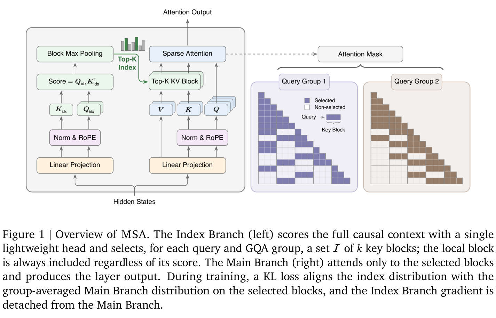
© 2026 MiniMax。保留所有权利。
1. 引言
大语言模型（LLM）正在迅速从短暂的单轮交互转向长时程 agent 工作流，跨越数百个交错的推理与行动步骤，包括编写和部署生产代码、浏览开放网络、协调各种工具以及生成结构化文档（Anthropic, 2025; DeepSeek-AI, 2026; Google DeepMind, 2025; Moonshot AI, 2026; OpenAI, 2025; Zhipu AI, 2026）。然而，这些任务要求的超长上下文给训练和推理带来了严重的计算与内存瓶颈，主要原因是具有二次计算成本的 softmax attention，而生产级部署的延迟和吞吐量约束进一步放大了这一问题。
上下文长度是 LLM 的一个关键扩展维度，在模型质量与效率之间进行权衡仍然是一项艰巨挑战。社区正在积极推进这一方向的 Pareto 前沿。混合架构（MiniMax, 2025b; Qwen, 2026）用线性 attention（Gu and Dao, 2023; Team et al., 2025a; Yang et al., 2025）或滑动窗口 attention（MiMo et al., 2026; OpenAI et al., 2025）等高效替代方案，替换部分 softmax attention 层。另一类工作则尝试使 softmax attention 本身稀疏化（DeepSeek-AI, 2026; DeepSeek-AI et al., 2025; Lu et al., 2025; Team et al., 2025b），以突破计算瓶颈。
我们提出 MiniMax Sparse Attention（MSA），其设计遵循 Occam 剃刀原则：经过广泛消融后，只保留必要组件。MSA 遵循稀疏 softmax attention 范式，以最大程度复用现有软件和硬件基础设施。我们采用按块 token 选择和较小的 top-\(k\)，从而在更广泛的 GPU 架构上高效执行，同时放宽先前设计对头维度的约束。具体而言，一个极轻量的索引分支通过最大池化评分，为每个 attention 组选择 top-\(k\) 块，同时始终保留最近的块以确保训练稳定性。
要将 MSA 的理论稀疏性转化为实际的端到端加速，需要协同设计算法及其 GPU 执行路径。为此，我们设计了专用于小 \(k\) 场景、无需指数运算的 TopK kernel，利用按块 indexer 绕过选择之前不必要的 softmax 计算。对于主 attention 分支，我们以 KV 为外层循环组织稀疏 attention：选中的 KV 块收集其对应查询并将它们拼接，以填满 Tensor Core MMA；利用预先调度的分块和两阶段合并，处理高度偏斜的块热度，而无需原子更新。对于训练，我们进一步将稀疏 KL 损失所需的辅助 LSE 计算融合进前向传播，并在反向传播中采用持久化负载均衡。
为验证 MSA 能够同时保留文本和多模态能力，我们在一个从头训练、预算为 3T token 的 109B 参数 Mixture of Experts（MoE）模型上，将其与 Grouped Query Attention 比较。MSA 在下游基准上的表现与 GQA 相当，同时在 1M 上下文长度下实现 14.2 倍 prefill 和 7.6 倍 decoding 加速。
主要贡献。
- 我们提出 MSA，一种精简、可扩展且经过加速的按块稀疏 attention 机制，既支持从头训练，也支持从预训练 GQA checkpoint 进行近乎无损的转换。
- 我们协同设计高效的训练和推理 kernel，将 MSA 的理论计算节省转化为大规模场景下实际运行时间的加速。
- 我们开展了广泛消融，规模扩展至原生多模态训练的 109B 参数 MoE 模型，剖析 MSA 在不同规模和模态下的行为。
2. 预备知识
2.1. 因果 Attention 与 GQA
我们用 \(N\) 表示序列长度，\(d_{\mathrm{model}}\) 表示隐藏维度，\(d_h\) 表示头维度。对于每个查询位置 \(t\) 和头 \(h\)，因果 Softmax Attention 计算如下：
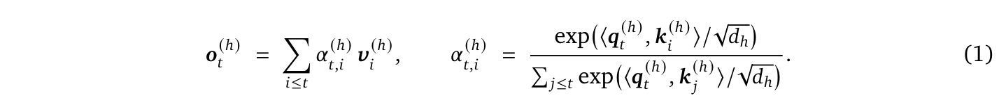
公式（1）的成本为 \(\Theta(2H_qN^2d_h)\) FLOPs，随序列长度 \(N\) 呈二次增长。Grouped-Query Attention（Ainslie et al., 2023）使用 \(H_q\) 个查询头，并将键值头数减少至 \(H_{kv}\)，将 \(G=H_q/H_{kv}\) 个相邻查询头绑定到一个共享键值头。因此，每个键值头定义一个 GQA 组。
2.2. 作为两阶段过程的稀疏 Attention
一个稀疏 attention 层将因果 attention 分解为两个步骤：由 indexer 选择要关注的键，再在选中的键上进行稀疏 attention 计算。对于每个查询位置 \(i\)，
其中，\(\mathrm{Index}_\phi\) 由 \(\phi\) 参数化（对于固定规则的 indexer，\(\phi\) 为空；对于可训练的 indexer，\(\phi\) 通过学习得到），\(\mathcal{I}_i\subseteq\{1,\ldots,i\}\) 表示选中的索引集合，Attn 表示限制在该索引集合上的标准缩放点积 softmax attention。我们将第一阶段称为索引分支，将第二阶段称为主分支。在多头 attention 中，由位置 \(i\) 和查询头 \(h\) 指定的每个查询，可以选择不同的键值索引集合，记作 \(\mathcal{I}_i^{(h)}\)；公式（2）仅为简化记号而省略头索引。
2.3. 基于 GQA 的块稀疏 Attention
按头进行 token 级选择提供了最细粒度，但这种细粒度计算难以高效映射到 GPU 矩阵运算。为提高效率，建立在 GQA 上的稀疏 attention 可以在每个 GQA 组内共享索引结果。令 \(\mathcal{H}_r\) 表示由第 \(r\) 个键值头服务的 \(G\) 个查询头。组共享的索引集合可写为：
选择键值块而非单个 token，可以减少路由开销，使稀疏 attention 更加规整。对于块大小 \(B_k\)，定义：
对于查询位置 \(i\) 和 GQA 组 \(r\)，集合 \(\mathcal{I}_i^{(r)}\subseteq\{1,\ldots,B\}\) 表示选中的块索引集合。随后，组 \(r\) 中任意查询头的稀疏 attention 输出，均使用同组的键值头，在选中块中因果可见的 token 上计算。MSA 遵循这一基于 GQA 的块稀疏表述，其具体 indexer 架构和训练目标将在下一节介绍。
3. MSA
我们提出 MiniMax Sparse Attention（MSA），一种基于 GQA、包含两个分支的稀疏 attention 机制，如图 1 所示。对于每个查询 token，轻量的索引分支从因果上下文中选择一小组键块，主分支则在这些块中的 token 上计算 softmax attention。索引分支只在标准 GQA 上增加两个投影矩阵，以块粒度运行，并为每个 GQA 组独立选择。我们在第 3.1 节介绍架构，在第 3.2 节介绍训练流程。
3.1. 架构
MSA 将第 2.2 节的两阶段稀疏 attention 表述具体化为 GQA 组与块粒度的形式（图 1）。对于每个查询 token，索引分支为每个 GQA 组选择 \(k\) 个大小为 \(B_k\) 的键块，主分支仅关注选中块中的 token，其预算最多为 \(kB_k\)。令 \(\boldsymbol{X}\in\mathbb{R}^{N\times d_{\mathrm{model}}}\) 为输入隐藏状态。沿用第 2.1 节的记号，\(H_q\) 和 \(H_{kv}\) 分别表示查询头和键值头数，因此每个键值头服务 \(G=H_q/H_{kv}\) 个查询头。
索引分支。索引分支为每个 GQA 组引入一个索引查询头，并引入一个跨组共享的索引键头：
对于查询 token \(i\) 和组 \(r\)，索引分支首先对可见的键 token 评分，然后将这些分数聚合到块级。使用第 2.3 节定义的块划分 \(\mathcal{B}_1,\ldots,\mathcal{B}_B\)，
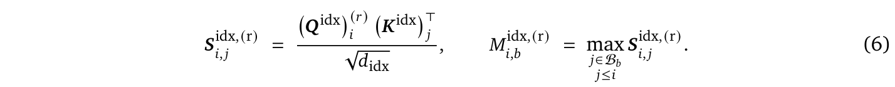
其中 \(r\) 是 GQA 组索引，\(j\leq i\) 确保因果性，没有可见 token 的块被赋予 \(-\infty\) 分数。随后，索引分支选择 top-\(k\) 块索引：
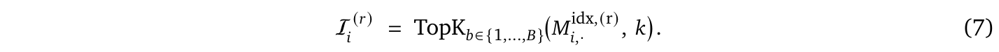
这里 \(\mathrm{TopK}(\cdot,k)\) 返回 \(M_{i,\cdot}^{\mathrm{idx},(r)}\) 下分数最高的 \(k\) 个块的索引。我们始终包含位置 \(i\) 所在的局部块，且 \(\mathcal{I}_i^{(r)}\) 由组 \(r\) 中所有 \(G\) 个查询头共享。
主分支。给定索引分支选出的块索引集合 \(\mathcal{I}_i^{(r)}\)，主分支仅关注选中块中因果可见的 token。对于任意查询头 \(h\in\mathcal{H}_r\)，它使用与 GQA 组 \(r\) 对应的键值头，在这些 token 上应用标准缩放点积 attention：
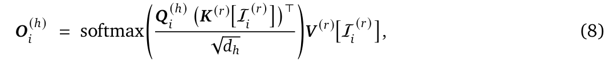
其中 \(\boldsymbol{Q}_i^{(h)}\) 表示位置 \(i\)、查询头 \(h\) 的查询向量，\(\boldsymbol{K}^{(r)}\) 和 \(\boldsymbol{V}^{(r)}\) 表示第 \(r\) 个 GQA 组的键和值矩阵。记号 \(\boldsymbol{K}^{(r)}[\mathcal{I}_i^{(r)}]\) 和 \(\boldsymbol{V}^{(r)}[\mathcal{I}_i^{(r)}]\) 表示从选中的块中收集因果可见的 token。块索引集合 \(\mathcal{I}_i^{(r)}\) 由 \(\mathcal{H}_r\) 中所有查询头共享，而每个头保留自己的查询投影。由于选中块最多包含 \(kB_k\) 个因果可见的 token，每个查询的 attention 成本从 \(O(N)\) 降低至 \(O(kB_k)\)，且这一成本不随序列长度增加而变化。
3.2. 训练
公式（7）的 top-\(k\) 选择不可微，因此语言建模损失无法直接训练索引 Q/K 投影 \(\boldsymbol{W}_q^{\mathrm{idx}}\)、\(\boldsymbol{W}_k^{\mathrm{idx}}\)。因此，我们用 KL 对齐损失训练索引分支，并采用三种机制稳定稀疏训练：gradient 分离、indexer warmup，以及强制保留局部块。下面介绍各组件。
KL 损失。KL 损失通过将索引分支在选中 token 上的分数与主分支匹配，为索引分支提供直接学习信号。将选中块索引所对应的因果可见 token 记为 \(\mathcal{I}_{i,\mathrm{tok}}^{(r)}=(\bigcup_{b\in\mathcal{I}_i^{(r)}}\mathcal{B}_b)\cap\{1,\ldots,i\}\)，对于每个查询位置 \(i\) 和 GQA 组 \(r\)，我们在这一 token 索引集合上定义索引分支分布 \(P^{\mathrm{idx}}\) 和主分支教师 \(P\)：
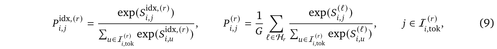
其中，\(S_{i,j}^{\mathrm{idx},(r)}=(\boldsymbol{Q}^{\mathrm{idx}})_i^{(r)}(\boldsymbol{K}^{\mathrm{idx}})_j^\top/\sqrt{d_{\mathrm{idx}}}\) 是 token 级索引分数，\(S_{i,j}^{(\ell)}=\boldsymbol{Q}_i^{(\ell)}(\boldsymbol{K}_j^{(r)})^\top/\sqrt{d_h}\) 是查询头 \(\ell\in\mathcal{H}_r\) 的主分支分数。教师 \(P\) 在概率层面对各头的主分支分布取平均。随后训练 indexer，使其与 \(P\) 匹配，并对所有查询位置和 GQA 组取平均：
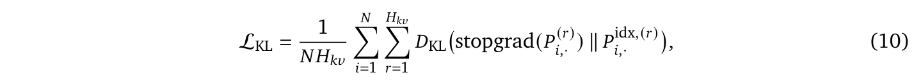
其中 \(N\) 是序列长度，教师分布 \(P_{i,\cdot}^{(r)}\) 与 gradient 计算分离。这一辅助损失将索引分布与主分支 attention 模式对齐，使之后的块选择具有语义意义。
Gradient 分离。为将辅助目标与主干隔离，我们对索引分支输入应用 stop-gradient：
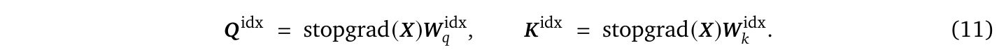
公式（9）的教师 \(P\) 已分离，因此 \(\mathcal{L}_{\mathrm{KL}}\) 不会影响主分支投影；公式（11）进一步阻止它通过 \(\boldsymbol{X}\) 作用于主干。在这一规则下，\(\mathcal{L}_{\mathrm{KL}}\) 只更新 \(\boldsymbol{W}_q^{\mathrm{idx}}\) 和 \(\boldsymbol{W}_k^{\mathrm{idx}}\)，使 KL 成为 indexer 的纯粹对齐信号。
Indexer warmup。我们采用两阶段训练计划初始化索引分支，避免早期的随机选择。在最初几次迭代中，模型在两个分支都运行全 attention，并用 \(\mathcal{L}_{\mathrm{KL}}\) 训练新加入的索引投影。warmup 后，模型切换到稀疏 attention，且在 top-\(k\) 选中的位置上计算 \(\mathcal{L}_{\mathrm{KL}}\)。将预训练全 attention checkpoint 稀疏化时也采用相同计划，这有助于在新加入的索引投影控制主分支路由之前将其对齐。
局部块。对于每个查询位置 \(i\) 和 GQA 组 \(r\)，在训练和推理期间，\(i\) 所在的局部块都始终作为 \(\mathcal{I}_i^{(r)}\) 的一部分被选中。这一固定分配保留一个块槽位，其余槽位由索引分支选择，防止出现遗漏查询紧邻区域的退化选择。
算法 1 总结了完整的层级训练流程。
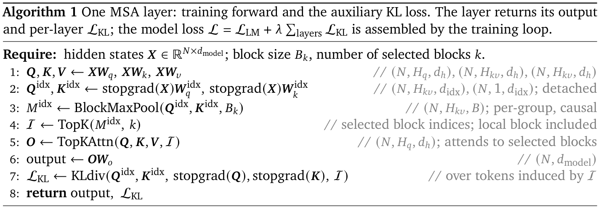
3.3. 计算复杂度
在相同的 \(H_q\)、\(H_{kv}\)、\(d_h\) 和序列长度 \(N\) 下，GQA 与 MSA 的因果 attention FLOPs 为：
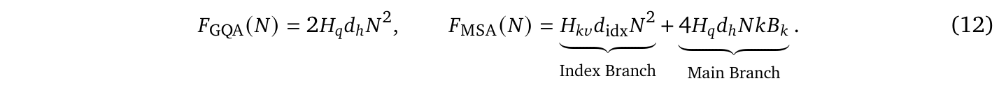
GQA 的主 attention 路径随完整上下文长度扩展，而 MSA 使用固定选择预算 \(kB_k\) 加轻量索引计算；因此，当 \(kB_k\ll N\) 且 \(H_{kv}d_{\mathrm{idx}}\ll H_qd_h\) 时，FLOPs 差距会随 \(N\) 增长。
4. Kernel 设计
本节介绍我们稀疏 prefill 实现所使用的 GPU kernel，包括索引 TopK kernel、以 KV 为外层循环的稀疏 attention 前向传播，以及稀疏 KL 损失反向传播。
4.1. 索引与 TopK
无需指数运算的选择。为高效选择 top-\(k\) KV 块，索引模块直接对索引分数 \(s\) 排序。由于 softmax 保序，分数的相对顺序保持不变（\(s_i\leq s_j\Longleftrightarrow\mathrm{softmax}(s)_i\leq\mathrm{softmax}(s)_j\)），因此 top-\(k\) 索引不变。前向传播由此绕过 softmax 的 max/exp/sum 步骤，将原始分数直接传给选择过程。
每线程寄存器 top-\(k\)。块大小 \(B_k\) 和选择大小 \(k\) 与 top-\(k\) kernel 协同设计：较大的 \(B_k\) 提高 attention 算术强度（第 4.2 节），而在这一 \(B_k\) 下采用较小的 \(k\)，使每行候选块数 \(B\) 和 \(k\) 都低于通用 top-\(k\) kernel 的最佳工作区间；后者要么在较大 \(B\) 下摊销多轮分桶成本（基数选择），要么复杂度为 \(O(B\log^2B)\)（双调排序）。我们采用 \(B_k=128\)、\(k=16\)。warp 的 32 个 lane 各自以 1/32 步幅流式读取输入行，并在共享内存中维护一个含 \(k\) 个元素的最小堆。堆根缓存在寄存器中，插入采用延迟写入。最后通过 \(k\) 轮 shuffle 合并，组合 32 个局部 TopK 结果。共享内存布局将每个 lane 映射到固定 bank，避免冲突。
基准。我们在 H800 GPU 上，使用 fp32 输入和未排序输出，与 torch.topk 和 TileLang（Wang et al., 2025）的基数选择 top-\(k\) 比较；延迟为 warmup 后 50 次迭代的中位数。表 1 表明，我们的专用 kernel 在所有测试配置下最快，在部署设置 \(k=16\) 下收益最大。
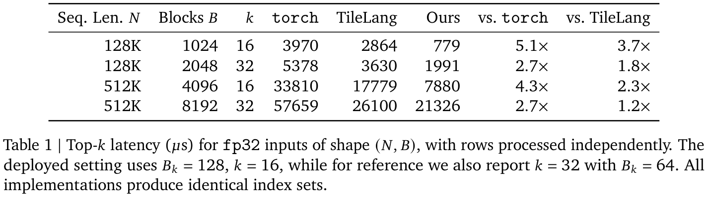
4.2. 稀疏 Attention
我们重新考察查询与键值长度相等时，稀疏 prefill 的迭代顺序选择。令 \(H_q\)、\(H_{kv}\)、\(G=H_q/H_{kv}\)、\(d_h\)、\(N\)、\(B_k\) 和 \(k\) 分别表示查询头数、键值头数、GQA 比率、头维度、序列长度、KV 块大小，以及每个查询选择的块数。为简化说明，下面的 IO 估算假设元素为 2 字节（与 bfloat16 相同的流量大小）。我们的 kernel 也支持 fp8；使用 fp8 会缩放绝对 IO 量，但不改变以 Q 为外层循环与以 KV 为外层循环的比较结果。
将查询放在外层循环进行迭代，可得：
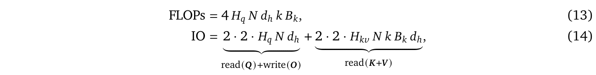
因此 \(\mathrm{FLOPs}/\mathrm{IO}\approx G\)。
将 KV 块放在外层循环，并收集选择了每个块的查询，需要一个中间输出缓冲区：
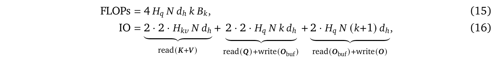
因此 \(\mathrm{FLOPs}/\mathrm{IO}\approx\frac{2}{3}B_k\)。
由于实践中 \(\frac{2}{3}B_k\gg G\)，我们选择以 KV 为外层循环并收集 Q，以最大化算术强度。kernel 在 (kv_block, kv_head) tile 上作为持久化网格执行。对于每个 tile，由 TopK 选择构建的反向稀疏索引确定相关查询位置。这些查询通过 TMA 复制加载到共享内存，每个查询 token 对应一次复制，由 warp 的 32 个 lane 并行派发。
预先调度的 tile 分块。每个 tile 直接映射到一个 CTA 的方式，会受到 sink 行的主导，即一个早期 KV 块被几乎所有查询选中；同样的热点模式也可能出现在任意高热度 KV 块上。因此，GPU 调度器 kernel 沿查询维度，将每个 KV tile 划分为最多约 \(2kB_k\) 个查询的块，把热点 tile 分摊给共享同一 K/V 加载的多个 CTA。由于每个查询的 \(k\) 个部分结果现在由 \(k\) 个 CTA 产生，调度器还会为每个 (query, chunk) 对预先分配 \(O_{\mathrm{buf}}\) 中一个槽位 \(s\in[0,k)\)，并将其与查询索引 \(i\) 一起打包成 32 位句柄，使 attention kernel 无需原子操作即可将部分结果写入预先分配的偏移。合并 kernel 读取每个查询的槽位数，确定需要合并多少个部分结果。
两阶段前向传播。以 KV 为外层循环的拆分无法进行内联 softmax 归一化，因为每个查询的 \(k\) 个部分结果由 \(k\) 个不同 CTA 产生。因此，前向传播分成两个 kernel，它们之间通过 HBM 缓冲区 \(O_{\mathrm{buf}}\in\mathbb{R}^{k\times n\times H_q\times d}\)（局部归一化的部分输出）和 \(\mathrm{LSE}_{\mathrm{buf}}\in\mathbb{R}^{k\times n\times H_q}\)（各部分的 logsumexp）连接。attention kernel 运行上述工作列表，并将每个部分结果写入预先分配的槽位。合并 kernel 读取每个查询的有效槽位，计算 \(a=\max_s\mathrm{LSE}_s\) 和 \(\mathrm{LSE}[i,h]=a+\log\sum_s\exp(\mathrm{LSE}_s-a)\)，然后形成归一化的 split-K 权重 \(w_s=\exp(\mathrm{LSE}_s-\mathrm{LSE}[i,h])\)。它输出 \(O[i,h]=\sum_sw_sO_{\mathrm{buf}}[s,i,h]\)，以及最终的 \(\mathrm{LSE}[i,h]\)。两个 kernel 使用 Programmatic Dependent Launch 隐藏 kernel 间的启动延迟。
查询拼接。以 KV 为外层循环的迭代，往往使每个 KV tile 只关联几个至几十个查询位置。逐个处理这些位置，会使分数 MMA 填充不足：当 \(G=16\) 时，一个查询位置只贡献 \(G\) 个查询头，使 MMA 的 \(M\) 维度只有 16。在以 Q 为外层循环的迭代中，查询位置不能沿序列维度拼接，因为它们通常选择不同的 KV 子集。而在以 KV 为外层循环的迭代中，某个 tile 的所有收集位置共享相同的 KV 操作数。因此，kernel 将 \(\lceil128/G\rceil\) 个查询位置及各自关联的 \(G\) 个查询头，在同一个 KV 头下打包成一个 \(128\times128\) 分数 MMA。
4.3. 稀疏 KL 损失
LSE 融合。在最初实现中，我们用专门的 kernel 计算 KL 散度前向传播，存储 \(\mathrm{LSE}_{\mathrm{main}}\) 和 \(\mathrm{LSE}_{\mathrm{idx}}\) 以便反向传播。然而，由于 KL 损失只影响反向 gradient，我们通过在主计算过程中直接将这些 LSE 值写入全局内存进行优化，从而完全跳过 KL 损失的前向传播。此外，在索引分支计算期间，我们保存每个块的 LSE，并对 top-\(k\) 块进行归约，得到 \(\mathrm{LSE}_{\mathrm{idx}}\)。随后，反向 kernel 将这些标量直接加载进 softmax，消除冗余的前向计算。
动态负载均衡。在变长序列和依赖数据的稀疏性下，每个 tile 的工作量可能相差数个数量级。kernel 作为持久化网格运行，CTA 通过全局原子计数器领取任务；每个 tile 沿收集到的查询维度划分为子 tile，其数量随每个 tile 的查询数变化，同时遵守最小子 tile 粒度，以摊销每个子 tile 的开销。
5. 实验
本节报告两个 109B 规模的实验，用于在采用文本和图像／视频混合数据训练的原生多模态模型上，验证最终 MSA 设计。第一个实验从头训练原生 MSA 模型，记为 MSA-PT。第二个实验从 Full-Attention checkpoint 出发，将稠密 attention 替换为 MSA 后继续预训练，记为 MSA-CPT。两个模型与 Full-Attention 基线采用相同的架构系列，但将稠密 attention 替换为 MSA 层。
5.1. 设置
模型结构。所有模型使用相同的 41 层 MoE 主干，总参数约 109B，每个 token 激活参数约 6B。前三层为稠密层，其余 38 层为 MoE 层。模型采用 200K token 词表和隐藏维度（接原文第 9 页）
（接原文第 8 页）\(d_{\mathrm{model}}=3072\)。每个 attention 模块使用 MSA，包含 64 个查询头、4 个 KV 头，头维度为 128，RoPE 维度为 64。每个 MoE 层使用 128 个路由专家、1 个共享专家，并选择 top-4 路由专家。在稀疏训练和评测期间，两个 MSA 模型均使用块大小 \(B_k=128\)，为每个查询和 GQA 组保留 \(k=16\) 个键值块。
训练预算。所有模型的总训练预算为 3T token。MSA-PT 从头训练：经过 40B token 的 indexer warmup 后，在剩余预训练过程中保持稀疏训练。MSA-CPT 从一个已训练 2.6T token 的 GQA Full-Attention checkpoint 出发。随后将稠密 attention 替换为 MSA，并继续训练 400B token：前 40B token 用于 indexer warmup，此后进行稀疏继续预训练。
评测。我们在相同预训练评测集上，使用同一训练预算下相匹配的 checkpoint，评估 Full、MSA-PT 和 MSA-CPT。对于通用推理和问答，我们使用 MMLU（Hendrycks et al., 2021）、MMLU-Pro（Wang et al., 2024a）、BBH（Suzgun et al., 2022）、GPQA Hard（Rein et al., 2023）、ARC Challenge（Clark et al., 2018）、TriviaQA（Joshi et al., 2017）和 WinoGrande（Sakaguchi et al., 2020）。对于数学和代码，我们使用 GSM8K（Cobbe et al., 2021）、MGSM（Shi et al., 2022）、MathVista（Lu et al., 2024）、OlymMATH（Sun et al., 2025）、HumanEval（Chen et al., 2021）、EvalPlus（Liu et al., 2023）、BigCodeBench（Zhuo et al., 2025）和 MultiPL-E MBPP（Cassano et al., 2023）。我们还评估多模态能力：图像基准包括 AI2D（Kembhavi et al., 2016）、ChartQA（Masry et al., 2022）、MMMU（Yue et al., 2024）、OCRBench v2（Fu et al., 2025）、CharXiv（Wang et al., 2024b）、VisualWebBench（Liu et al., 2024）和 CVBench（Tong et al., 2024）；视频基准包括 EgoSchema（Mangalam et al., 2023）、LongVideoBench（Wu et al., 2024）、MLVU（Zhou et al., 2025）、MMVU（Zhao et al., 2025b）、VideoMME（Fu et al., 2024）和 TemporalBench（Cai et al., 2024）。对于长上下文评测，我们使用 RULER（Hsieh et al., 2024）和 HELMET（Yen et al., 2025）。我们还报告下游 agent 任务的困惑度，包括 \(\tau_2\)-bench（Barres et al., 2025）、TheAgentCompany（Xu et al., 2024）、Humanity’s Last Exam（Phan et al., 2025）和 SWE-bench（Jimenez et al., 2024）。
5.2. 训练动态
图 2 将原生稀疏预训练与匹配的全 attention 训练进行比较。在 3T token 的训练过程中，两条 LM 损失曲线几乎无法区分，表明相较于全 attention，MSA 没有引入明显的优化退化。gradient 范数曲线在整个训练过程中也保持在相同范围内，表明 MSA 没有导致异常 gradient 波动或训练不稳定。这些结果说明，大规模训练稀疏 attention 模型与训练全 attention 基线一样稳定。
图 3 展示了从已训练的全 attention checkpoint 转向稀疏继续预训练的过程。indexer warmup 阶段在启用稀疏 attention 前迅速降低 KL 损失。切换到稀疏 CPT 后，KL 损失保持较低。对于每个查询和 GQA 头，令 \(\mathcal{I}^{\star}\) 为主分支分数所对应的 Top-\(k\) 块集合，\(\widehat{\mathcal{I}}\) 为索引分支的选择。块召回率为 \(|\mathcal{I}^{\star}\cap\widehat{\mathcal{I}}|/|\mathcal{I}^{\star}|\)，分数召回率为 \(\sum_{b\in\mathcal{I}^{\star}\cap\widehat{\mathcal{I}}}P_b/\sum_{b\in\mathcal{I}^{\star}}P_b\)，其中 \(P_b\) 为块 \(b\) 中 token 的主分支 attention 概率之和。块召回率保持良好，说明能够可靠找回重要块。更高的分数召回率进一步表明，检索到的块覆盖了主分支 attention 概率质量的大部分。综合来看，这些动态说明 warmup 提供了顺畅的转换阶段，且 CPT indexer 在稀疏继续预训练期间保持良好对齐。
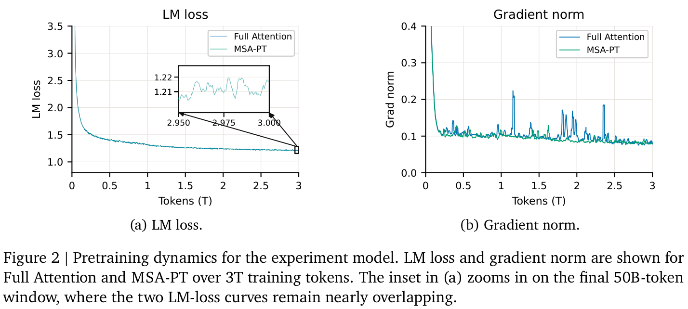
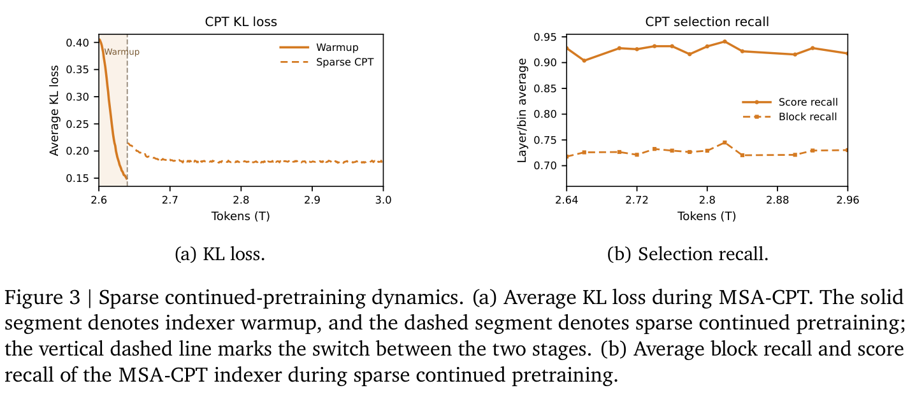
5.3. 主要结果
表 2 在一组具有代表性的预训练评测上比较 Full、MSA-PT 和 MSA-CPT。两个稀疏模型整体上都保持了与 Full-Attention 基线的竞争力，说明用 MSA 替换稠密 attention 不会显著损害模型的通用语言、推理、多模态能力，或面向 agent 的困惑度表现。两条训练路线各有所长。MSA-PT 在整个预训练过程中学习稀疏模式，在许多数学、图像、视频和长上下文检索基准上取得最强结果，说明原生稀疏预训练可以使模型表示适应稀疏 attention 模式。MSA-CPT 则更保守：它保留了 Full-Attention checkpoint 的大部分行为，在大多数文本、代码和 PPL 评测上保持接近，因此在已有训练好的稠密 checkpoint 时，是一种实用的转换路线。剩余差距取决于具体基准，而非集中于某一类能力。
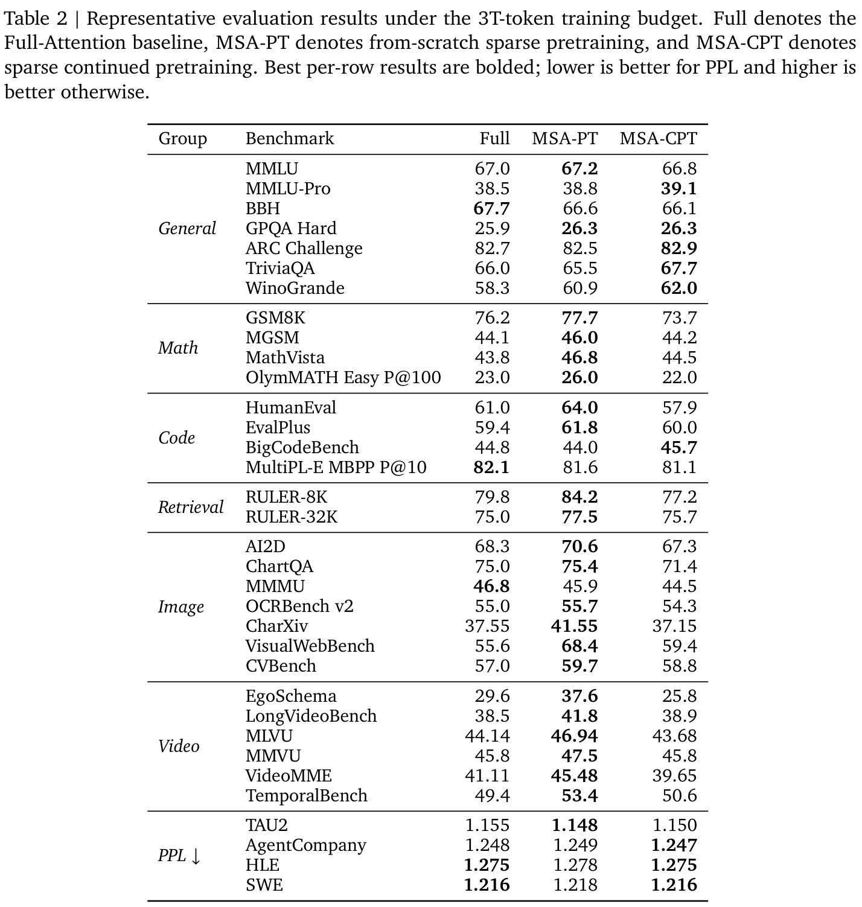
为评估 MSA 在长上下文扩展后是否仍然有效，我们对 MSA-CPT 模型开展了额外的扩展实验。从稀疏继续预训练 checkpoint 出发，我们进行约 140B token 的长上下文训练，然后在 HELMET 和 RULER 上评测。结果见表 3。扩展阶段结束后，MSA-CPT 仍然接近 Full-Attention 基线。由于每个查询和 GQA 组仍然只关注 \(kB_k=16\times128=2{,}048\) 个键值 token，这些结果表明，MSA 可以在极为紧凑的 attention 预算下保留长上下文能力。
支持这些设计选择的额外消融见附录。具体而言，B 节研究索引分支的训练方案，包括 gradient 来源、KL gradient 分离、warmup，以及与滑动窗口稀疏基线的比较。C 节进一步考察架构选择，例如块大小、强制保留 sink、局部选择和索引分支的（接原文第 12 页）
（接原文第 11 页）值头。这些消融为主要实验所采用的最终 MSA 设计提供了实证依据。
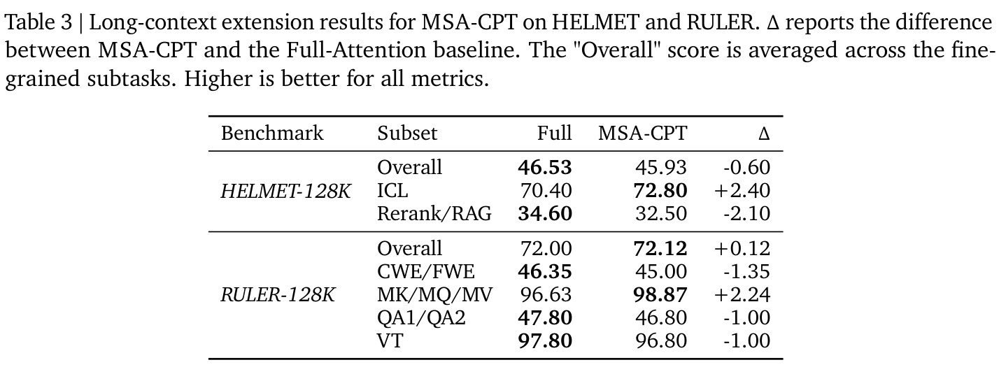
5.4. 效率
我们将第 3.3 节的复杂度分析具体应用于实验模型配置，并同时报告理论 attention FLOPs 降低和实测运行时间加速。稠密 GQA 与 MSA 使用相同的查询头数、键值头数、头维度和上下文长度；唯一差别在于，稠密 GQA 关注完整上下文，而 MSA 先进行索引选择，再在固定 KV 预算上执行稀疏 attention。在我们的设置中，MSA 使用 \(B_k=128\) 和 \(k=16\)，对应每个查询选中 \(kB_k=2{,}048\) 个 token 的预算。
如图 4 所示，在我们的设置中，MSA 相较 GQA 大幅降低了每个 token 的 attention FLOPs，且上下文越长，降幅越大。在 1M token 下，相同头配置的 FLOPs 降幅达到 28.4 倍。实测运行时间加速遵循相同的扩展趋势，但预计不会与 FLOPs 降幅完全一致。稀疏 attention 引入了索引构建、top-\(k\) 选择、反向索引物化、查询收集和负载均衡开销，其内存访问模式也比稠密 attention 更不规整。因此，运行时间加速小于理论 FLOPs 降幅，但它会随着上下文长度增加而增大，因为稠密基线继续随完整序列扩展，而 MSA 保持固定的主 attention 预算。
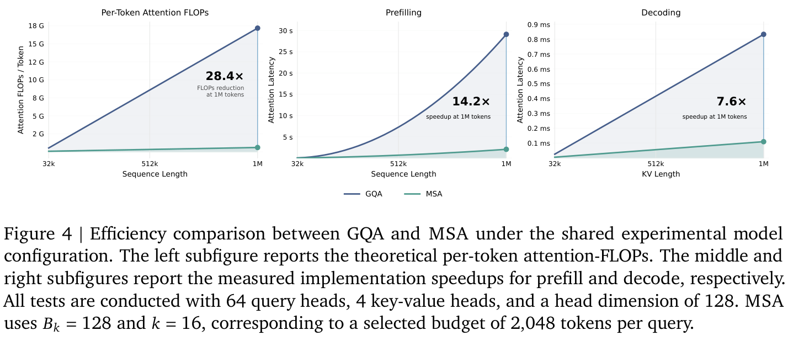
6. 相关工作
长上下文效率推动了大量高效 attention 研究，可大致分为两个方向：用更低成本的线性或循环替代方案取代稠密 softmax attention，以及保留 softmax attention 但限制其感受野。线性 attention（Choromanski et al., 2021; Katharopoulos et al., 2020）用线性复杂度的替代形式取代 softmax kernel，而 Mamba 等状态空间模型（Gu and Dao, 2023）用隐藏状态上的选择性递归取代 attention。混合堆叠（MiniMax, 2025a,b）交错安排线性块与全 attention 块，减少具有二次复杂度的层数，同时保留部分精确 softmax 能力。固定模式 attention 保留 softmax attention，但施加预定义支持集，包括局部窗口、全局 token（Beltagy et al., 2020; Zaheer et al., 2020），以及配合滑动窗口的 attention sink（Xiao et al., 2024b）。这些方法通过部分或完全替换稠密 attention，或使用与内容无关的 attention 模式来降低长上下文成本。
除固定稀疏模式外，自适应稀疏 attention 使所关注的支持集依赖输入。现有方法主要区别在于何时构建这一支持集，以及选择器是否作为模型的一部分训练。推理时稀疏化在预训练的 Full-Attention 主干上运行，仅在服务期间构建稀疏支持集。H2O（Zhang et al., 2023）和 SnapKV（Li et al., 2024）在 decoding 期间使用累积 attention 统计剪枝 KV cache；Quest（Tang et al., 2024）为每个查询进行页级重要性估计；MInference（Jiang et al., 2024）和 FlexPrefill（Lai et al., 2025）在 prefill 期间派发按头的稀疏 kernel；InfLLM（Xiao et al., 2024a）维护 attention sink、局部上下文窗口和可检索块。这些方法继承了 Full Attention 的训练成本，并使至少一个推理阶段接近 Full Attention 的速度。原生训练的稀疏 attention 设计在预训练期间训练 indexer，是与 MSA 最接近的先前工作。NSA（Yuan et al., 2025）面向 MQA/MHA 主干，采用三个并行分支：用于粗粒度全局上下文的压缩 attention、细粒度块上的选择 attention，以及局部上下文的滑动窗口。InfLLM-V2（Zhao et al., 2025a）通过统一无参数块选择与局部滑动窗口，实现零样本稠密到稀疏切换。MoBA（Lu et al., 2025）也在 GQA 上运行，但使用由块平均键评分的非常大的 KV 块，其 indexer 只通过语言建模 gradient 训练。DSA（DeepSeek-AI et al., 2025）建立在处于 MQA 模式的 MLA 之上：基于多头 ReLU 的 lightning indexer 对单个 token 评分，所有查询头共享一个 Top-\(k\) 索引，选择发生在 token 级。MSA 与这组相关工作在两个同时采用的维度上不同：将每个 GQA 组内的 Top-\(k\) 共享与块级选择结合，在保持 KV 读取连续的同时，实现多组、块粒度的检索。
高效 kernel 对于将稀疏 attention 的理论 FLOPs 降幅转化为实际运行时间加速至关重要。FlashAttention（Dao et al., 2022）和 FlashAttention-2（Dao, 2024）引入了 IO 感知的分块 softmax attention，FlashDecoding（Dao et al., 2023）将其扩展到受内存限制的 decoding。Flash-Sparse-Attention（Yan et al., 2025）和 FlashMoBA（Xiao et al., 2025）等开源块稀疏 kernel，提供了这一递推过程的块稀疏变体。第 4 节描述的 MSA kernel 复用 FlashAttention 的算法骨架，并将循环顺序调整为适合 MSA 所产生的原生 GQA、块粒度访问模式。
7. 结论
我们介绍了 MSA，一种与 Grouped-Query Attention 协同设计的稀疏 attention 机制。该架构为标准 GQA 层附加轻量索引分支：每个 GQA 组通过块级点积 indexer，独立选择一小组键值块，而（接原文第 14 页）
（接原文第 13 页）主分支执行限制在选中块上的 softmax attention。索引分支是一个纯选择器，通过与主分支的 KL 对齐损失训练，采用两阶段 warmup 计划，并对索引输入应用 stop-gradient，将辅助损失限制在索引投影内。在 109B MoE 规模下，MSA 在大多数预训练和 agent 基准上保留了 GQA Full-Attention 基线的能力，同时在 1M 上下文下将每个 token 的 attention 计算量降低 28.4 倍；在这一范围内，长上下文推理成为制约部署的瓶颈。
展望。MSA 的核心决策——每个 GQA 组独立选择、块级粒度，以及通过 KL 对齐目标训练的 indexer——可以与当前大多数开放前沿模型共享的 GQA 主干组合，因此这一方案应当能够以少量修改迁移。两个方向是自然的下一步：通过更长的稀疏训练、推理时更大的选择预算，或更丰富的 indexer 评分函数，弥合剩余的长上下文检索差距；以及将相同的纯选择器设计扩展到预训练之外，包括强化学习后训练和 agent 部署，这些场景中长上下文成本是主要运行约束。
参考文献
Joshua Ainslie, James Lee-Thorp, Michiel de Jong, Yury Zemlyanskiy, Federico Lebrón, and Sumit Sanghai. GQA：从多头 checkpoint 训练广义 multi-query transformer 模型。 发表于 2023 Conference on Empirical Methods in Natural Language Processing (EMNLP), 2023.
Anthropic. Claude Opus 4.6 与 Sonnet 4.6 模型卡。 https://www.anthropic.com/news/claude-4-6">https://www.anthropic.com/news/claude-4-6, 2025.
Victor Barres, Honghua Dong, Soham Ray, Xujie Si, and Karthik Narasimhan. τ2-bench：在双重控制环境中评估对话 agent。 arXiv 预印本 arXiv:2506.07982, 2025.
Iz Beltagy, Matthew E. Peters, and Arman Cohan. Longformer：长文档 transformer。 arXiv 预印本 arXiv:2004.05150, 2020.
Mu Cai, Reuben Tan, Jianrui Zhang, Bocheng Zou, Kai Zhang, Feng Yao, Fangrui Zhu, Jing Gu, Yiwu Zhong, Yuzhang Shang, Yao Dou, Jaden Park, Jianfeng Gao, Yong Jae Lee, and Jianwei Yang. TemporalBench：评测多模态视频模型的细粒度时间理解， 2024. 链接 https://arxiv.org/abs/2410.10818.
Federico Cassano, John Gouwar, Daniel Nguyen, Sydney Nguyen, Luna Phipps-Costin, Donald Pinckney, Ming-Ho Yee, Yangtian Zi, Carolyn Jane Anderson, Molly Q. Feldman, Arjun Guha, Michael Greenberg, and Abhinav Jangda. MultiPL-E：一种可扩展的多语言神经代码生成评测方法。 IEEE Transactions on Software Engineering, 49(7):3675–3691, 2023.
Mark Chen, Jerry Tworek, Heewoo Jun, Qiming Yuan, Henrique Ponde de Oliveira Pinto, Jared Kaplan, Harri Edwards, Yuri Burda, Nicholas Joseph, Greg Brockman, Alex Ray, Raul Puri, Gretchen Krueger, Michael Petrov, Heidy Khlaaf, Girish Sastry, Pamela Mishkin, Brooke Chan, Scott Gray, Nick Ryder, Mikhail Pavlov, Alethea Power, Lukasz Kaiser, Mohammad Bavarian, Clemens Winter, Philippe Tillet, Felipe Petroski Such, Dave Cummings, Matthias Plappert, Fotios Chantzis, Elizabeth Barnes, Ariel Herbert-Voss, William Hebgen Guss, Alex Nichol, Alex Paino, Nikolas Tezak, Jie Tang, Igor Babuschkin, Suchir Balaji, Shantanu Jain, William Saunders, Christopher Hesse, Andrew N. Carr, Jan Leike, Josh Achiam, Vedant Misra, Evan Morikawa, Alec Radford, Matthew Knight, Miles Brundage, Mira Murati, Katie Mayer, Peter Welinder, Bob McGrew, Dario Amodei, Sam McCandlish,
Ilya Sutskever, and Wojciech Zaremba. 评估在代码上训练的大语言模型， 2021. 链接 https://arxiv.org/abs/2107.03374.
Krzysztof Choromanski, Valerii Likhosherstov, David Dohan, Xingyou Song, Andreea Gane, Tamás Sarlós, Peter Hawkins, Jared Davis, Afroz Mohiuddin, Lukasz Kaiser, David Belanger, Lucy Colwell, and Adrian Weller. 用 Performer 重新思考 attention。 发表于 International Conference on Learning Representations (ICLR), 2021.
Peter Clark, Isaac Cowhey, Oren Etzioni, Tushar Khot, Ashish Sabharwal, Carissa Schoenick, and Oyvind Tafjord. 认为你已经解决了问答？试试 ARC，即 AI2 推理挑战， 2018. 链接 https://arxiv.org/abs/1803.05457.
Karl Cobbe, Vineet Kosaraju, Mohammad Bavarian, Mark Chen, Heewoo Jun, Lukasz Kaiser, Matthias Plappert, Jerry Tworek, Jacob Hilton, Reiichiro Nakano, Christopher Hesse, and John Schulman. 训练验证器以解决数学应用题， 2021. 链接 https://arxiv.org/abs/2110.14168">https://arxiv.org/abs/2110.14168.
Tri Dao. FlashAttention-2：通过更好的并行与任务划分加速 attention。 发表于 International Conference on Learning Representations (ICLR), 2024.
Tri Dao, Daniel Y. Fu, Stefano Ermon, Atri Rudra, and Christopher Ré. FlashAttention：具有 IO 感知能力、快速且内存高效的精确 attention。 发表于 Advances in Neural Information Processing Systems, 2022.
Tri Dao, Daniel Haziza, Francisco Massa, and Grigory Sizov. 用于长上下文推理的 Flash-Decoding， 2023. https://crfm.stanford.edu/2023/10/12/flashdecoding.html.
DeepSeek-AI. DeepSeek-V4：迈向高效的百万 token 上下文智能， 2026. 技术报告（预览版）。
DeepSeek-AI, Aixin Liu, Aoxue Mei, Bangcai Lin, Bing Xue, Bingxuan Wang, Bingzheng Xu, Bochao Wu, Bowei Zhang, Chaofan Lin, Chen Dong, Chengda Lu, Chenggang Zhao, Chengqi Deng, Chenhao Xu, Chong Ruan, Damai Dai, Daya Guo, Dejian Yang, Deli Chen, Erhang Li, Fangqi Zhou, Fangyun Lin, Fucong Dai, Guangbo Hao, Guanting Chen, Guowei Li, H. Zhang, Hanwei Xu, Hao Li, Haofen Liang, Haoran Wei, Haowei Zhang, Haowen Luo, Haozhe Ji, Honghui Ding, Hongxuan Tang, Huanqi Cao, Huazuo Gao, Hui Qu, Hui Zeng, Jialiang Huang, Jiashi Li, Jiaxin Xu, Jiewen Hu, Jingchang Chen, Jingting Xiang, Jingyang Yuan, Jingyuan Cheng, Jinhua Zhu, Jun Ran, Junguang Jiang, Junjie Qiu, Junlong Li, Junxiao Song, Kai Dong, Kaige Gao, Kang Guan, Kexin Huang, Kexing Zhou, Kezhao Huang, Kuai Yu, Lean Wang, Lecong Zhang, Lei Wang, Liang Zhao, Liangsheng Yin, Lihua Guo, Lingxiao Luo, Linwang Ma, Litong Wang, Liyue Zhang, M. S. Di, M. Y Xu, Mingchuan Zhang, Minghua Zhang, Minghui Tang, Mingxu Zhou, Panpan Huang, Peixin Cong, Peiyi Wang, Qiancheng Wang, Qihao Zhu, Qingyang Li, Qinyu Chen, Qiushi Du, Ruiling Xu, Ruiqi Ge, Ruisong Zhang, Ruizhe Pan, Runji Wang, Runqiu Yin, Runxin Xu, Ruomeng Shen, Ruoyu Zhang, S. H. Liu, Shanghao Lu, Shangyan Zhou, Shanhuang Chen, Shaofei Cai, Shaoyuan Chen, Shengding Hu, Shengyu Liu, Shiqiang Hu, Shirong Ma, Shiyu Wang, Shuiping Yu, Shunfeng Zhou, Shuting Pan, Songyang Zhou, Tao Ni, Tao Yun, Tian Pei, Tian Ye, Tianyuan Yue, Wangding Zeng, Wen Liu, Wenfeng Liang, Wenjie Pang, Wenjing Luo, Wenjun Gao, Wentao Zhang, Xi Gao, Xiangwen Wang, Xiao Bi, Xiaodong Liu, Xiaohan Wang, Xiaokang Chen, Xiaokang Zhang, Xiaotao Nie, Xin Cheng, Xin Liu, Xin Xie, Xingchao Liu, Xingkai Yu, Xingyou Li, Xinyu Yang, Xinyuan Li, Xu Chen, Xuecheng Su, Xuehai Pan, Xuheng Lin, Xuwei Fu, Y. Q. Wang, Yang Zhang, Yanhong Xu, Yanru Ma, Yao Li, Yao Li, Yao Zhao, Yaofeng Sun, Yaohui Wang, Yi Qian, Yi Yu, Yichao Zhang, Yifan Ding, Yifan Shi, Yiliang Xiong, Ying He, Ying Zhou, Yinmin Zhong, Yishi Piao, Yisong Wang, Yixiao Chen, Yixuan
Tan, Yixuan Wei, Yiyang Ma, Yiyuan Liu, Yonglun Yang, Yongqiang Guo, Yongtong Wu, Yu Wu, Yuan Cheng, Yuan Ou, Yuanfan Xu, Yuduan Wang, Yue Gong, Yuhan Wu, Yuheng Zou, Yukun Li, Yunfan Xiong, Yuxiang Luo, Yuxiang You, Yuxuan Liu, Yuyang Zhou, Z. F. Wu, Z. Z. Ren, Zehua Zhao, Zehui Ren, Zhangli Sha, Zhe Fu, Zhean Xu, Zhenda Xie, Zhengyan Zhang, Zhewen Hao, Zhibin Gou, Zhicheng Ma, Zhigang Yan, Zhihong Shao, Zhixian Huang, Zhiyu Wu, Zhuoshu Li, Zhuping Zhang, Zian Xu, Zihao Wang, Zihui Gu, Zijia Zhu, Zilin Li, Zipeng Zhang, Ziwei Xie, Ziyi Gao, Zizheng Pan, Zongqing Yao, Bei Feng, Hui Li, J. L. Cai, Jiaqi Ni, Lei Xu, Meng Li, Ning Tian, R. J. Chen, R. L. Jin, S. S. Li, Shuang Zhou, Tianyu Sun, X. Q. Li, Xiangyue Jin, Xiaojin Shen, Xiaosha Chen, Xinnan Song, Xinyi Zhou, Y. X. Zhu, Yanping Huang, Yaohui Li, Yi Zheng, Yuchen Zhu, Yunxian Ma, Zhen Huang, Zhipeng Xu, Zhongyu Zhang, Dongjie Ji, Jian Liang, Jianzhong Guo, Jin Chen, Leyi Xia, Miaojun Wang, Mingming Li, Peng Zhang, Ruyi Chen, Shangmian Sun, Shaoqing Wu, Shengfeng Ye, T. Wang, W. L. Xiao, Wei An, Xianzu Wang, Xiaowen Sun, Xiaoxiang Wang, Ying Tang, Yukun Zha, Zekai Zhang, Zhe Ju, Zhen Zhang, and Zihua Qu. DeepSeek-V3.2：推进开放大语言模型的前沿， 2025. 链接 https://arxiv.org/abs/2512.02556.
Chaoyou Fu, Yuhan Dai, Yongdong Luo, Lei Li, Shuhuai Ren, Renrui Zhang, Zihan Wang, Chenyu Zhou, Yunhang Shen, Mengdan Zhang, 等 Video-MME：首个全面评估多模态 LLM 视频分析能力的基准。 arXiv 预印本 arXiv:2405.21075, 2024.
Ling Fu, Zhebin Kuang, Jiajun Song, Mingxin Huang, Biao Yang, Yuzhe Li, Linghao Zhu, Qidi Luo, Xinyu Wang, Hao Lu, Zhang Li, Guozhi Tang, Bin Shan, Chunhui Lin, Qi Liu, Binghong Wu, Hao Feng, Hao Liu, Can Huang, Jingqun Tang, Wei Chen, Lianwen Jin, Yuliang Liu, and Xiang Bai. OCRBench v2：评估大多模态模型视觉文本定位与推理能力的改进基准， 2025. 链接 https://arxiv.org/abs/2501.00321.
Google DeepMind. Gemini 3.1 Pro。 https://deepmind.google/technologies/gemini/, 2025.
Albert Gu and Tri Dao. Mamba：通过选择性状态空间进行线性时间序列建模。 arXiv 预印本 arXiv:2312.00752, 2023.
Dan Hendrycks, Collin Burns, Steven Basart, Andy Zou, Mantas Mazeika, Dawn Song, and Jacob Steinhardt. 衡量大规模多任务语言理解。 发表于 International Conference on Learning Representations, 2021. 链接 https://openreview.net/forum?id=d7KBjmI3GmQ.
Cheng-Ping Hsieh, Simeng Sun, Samuel Kriman, Shantanu Acharya, Dima Rekesh, Fei Jia, and Boris Ginsburg. RULER：你的长上下文语言模型的真实上下文长度是多少？ In First Conference on Language Modeling, 2024. 链接 https://openreview.net/forum?id=kIoBbc76Sy">https://openreview.net/forum?id=kIoBbc76Sy.
Huiqiang Jiang, Yucheng Li, Chengruidong Zhang, Qianhui Wu, Xufang Luo, Surin Ahn, Zhenhua Han, Amir H. Abdi, Dongsheng Li, Chin-Yew Lin, Yuqing Yang, and Lili Qiu. MInference 1.0：通过动态稀疏 attention 加速长上下文 LLM 的 prefill。 发表于 Advances in Neural Information Processing Systems, 2024.
Carlos E. Jimenez, John Yang, Alexander Wettig, Shunyu Yao, Kexin Pei, Ofir Press, and Karthik R. Narasimhan. SWE-bench：语言模型能解决现实中的 GitHub issue 吗？ 发表于 International Conference on Learning Representations (ICLR), 2024.
Mandar Joshi, Eunsol Choi, Daniel Weld, and Luke Zettlemoyer. TriviaQA：用于阅读理解的大规模远程监督挑战数据集。 In Regina Barzilay and Min-Yen Kan, 编， Proceedings of the 55th Annual Meeting of the Association for Computational Linguistics (Volume
1: Long Papers), 页码 1601–1611, Vancouver, Canada, July 2017. Association for Computational Linguistics. doi: 10.18653/v1/P17-1147. 链接 https://aclanthology.org/P17-1147/.
Angelos Katharopoulos, Apoorv Vyas, Nikolaos Pappas, and François Fleuret. Transformer 是 RNN：使用线性 attention 的快速自回归 transformer。 发表于 International Conference on Machine Learning (ICML), 2020.
Aniruddha Kembhavi, Michael Salvato, Eric Kolve, Minjoon Seo, Hannaneh Hajishirzi, and Ali Farhadi. 一张图示胜过十二张图像。 In European Conference on Computer Vision (ECCV), 2016.
Xunhao Lai, Jianqiao Lu, Yao Luo, Yiyuan Ma, and Xun Zhou. FlexPrefill：用于高效长序列推理的上下文感知稀疏 attention 机制。 In The Thirteenth International Conference on Learning Representations, ICLR 2025, Singapore, April 24-28, 2025. OpenReview.net, 2025. 链接 https://openreview.net/forum?id=OfjIlbelrT.
Yuhong Li, Yingbing Huang, Bowen Yang, Bharat Venkitesh, Acyr Locatelli, Hanchen Ye, Tianle Cai, Patrick Lewis, and Deming Chen. SnapKV：LLM 在生成前就知道你在寻找什么。 发表于 Advances in Neural Information Processing Systems, 2024.
Jiawei Liu, Chunqiu Steven Xia, Yuyao Wang, and LINGMING ZHANG. ChatGPT 为你生成的代码真的正确吗？对大语言模型代码生成能力的严格评估。 In A. Oh, T. Naumann, A. Globerson, K. Saenko, M. Hardt, and S. Levine, 编， Advances in Neural Information Processing Systems, 卷 36, 页码 21558–21572. Curran Associates, Inc., 2023. 链接 https://proceedings.neurips.cc/paper_files/paper/2023/file/43e9d647ccd3e4b7b5baab53f0368686-Paper-Conference.pdf">https://proceedings.neurips.cc/paper_files/paper/2023/file/43e9d647ccd3e4b7b5baab53f0368686-Paper-Conference.pdf.
Junpeng Liu, Yifan Song, Bill Yuchen Lin, Wai Lam, Graham Neubig, Yuanzhi Li, and Xiang Yue. VisualWebBench：多模态 LLM 的网页理解与定位能力发展到了什么程度？ In First Conference on Language Modeling, 2024. 链接 https://openreview.net/forum?id=egVSgtJJAx">https://openreview.net/forum?id=egVSgtJJAx.
Enzhe Lu, Zhejun Jiang, Jingyuan Liu, Yulun Du, Tao Jiang, Chao Hong, Shaowei Liu, Weiran He, Enming Yuan, Yuzhi Wang, Zhiqi Huang, Huan Yuan, Suting Xu, Xinran Xu, Guokun Lai, Yanru Chen, Huabin Zheng, Junjie Yan, Jianlin Su, Yuxin Wu, Neo Y. Zhang, Zhilin Yang, Xinyu Zhou, Mingxing Zhang, and Jiezhong Qiu. MoBA：用于长上下文 LLM 的块 attention 混合， 2025. 链接 https://arxiv.org/abs/2502.13189.
Pan Lu, Hritik Bansal, Tony Xia, Jiacheng Liu, Chunyuan Li, Hannaneh Hajishirzi, Hao Cheng, Kai-Wei Chang, Michel Galley, and Jianfeng Gao. MathVista：评估基础模型在视觉上下文中的数学推理能力。 In The Twelfth International Conference on Learning Representations, 2024. 链接 https://openreview.net/forum?id=KUNzEQMWU7.
Karttikeya Mangalam, Raiymbek Akshulakov, and Jitendra Malik. EgoSchema：用于超长视频语言理解的诊断基准。 发表于 Advances in Neural Information Processing Systems (NeurIPS) Datasets and Benchmarks Track, 2023.
Ahmed Masry, Do Xuan Long, Jia Qing Tan, Shafiq Joty, and Enamul Hoque. ChartQA：通过视觉与逻辑推理回答图表问题的基准。 In Smaranda Muresan, Preslav Nakov, and Aline Villavicencio, 编， Findings of the Association for Computational Linguistics: ACL 2022, 页码 2263–2279, Dublin, Ireland, May 2022. Association for Computational Linguistics. doi: 10.18653/v1/2022.findings-acl.177. 链接 https://aclanthology.org/2022.findings-acl.177/">https://aclanthology.org/2022.findings-acl.177/.
MiMo, Bangjun Xiao, Bingquan Xia, Bo Yang, Bofei Gao, Bowen Shen, Chen Zhang, Chenhong He, Chiheng Lou, Fuli Luo, Gang Wang, Gang Xie, Hailin Zhang, Hanglong Lv, Hanyu Li, Heyu Chen, Hongshen Xu, Houbin Zhang, Huaqiu Liu, Jiangshan Duo, Jianyu Wei, Jiebao Xiao, Jinhao Dong, Jun Shi, Junhao Hu, Kainan Bao, Kang Zhou, Lei Li, Liang Zhao, Linghao Zhang, Peidian Li, Qianli Chen, Shaohui Liu, Shihua Yu, Shijie Cao, Shimao Chen, Shouqiu Yu, Shuo Liu, Tianling Zhou, Weijiang Su, Weikun Wang, Wenhan Ma, Xiangwei Deng, Bohan Mao, Bowen Ye, Can Cai, Chenghua Wang, Chengxuan Zhu, Chong Ma, Chun Chen, Chunan Li, Dawei Zhu, Deshan Xiao, Dong Zhang, Duo Zhang, Fangyue Liu, Feiyu Yang, Fengyuan Shi, Guoan Wang, Hao Tian, Hao Wu, Heng Qu, Hongfei Yi, Hongxu An, Hongyi Guan, Xing Zhang, Yifan Song, Yihan Yan, Yihao Zhao, Yingchun Lai, Yizhao Gao, Yu Cheng, Yuanyuan Tian, Yudong Wang, Zhen Tang, Zhengju Tang, Zhengtao Wen, Zhichao Song, Zhixian Zheng, Zihan Jiang, Jian Wen, Jiarui Sun, Jiawei Li, Jinlong Xue, Jun Xia, Kai Fang, Menghang Zhu, Nuo Chen, Qian Tu, Qihao Zhang, Qiying Wang, Rang Li, Rui Ma, Shaolei Zhang, Shengfan Wang, Shicheng Li, Shuhao Gu, Shuhuai Ren, Sirui Deng, Tao Guo, Tianyang Lu, Weiji Zhuang, Weikang Zhang, Weimin Xiong, Wenshan Huang, Wenyu Yang, Xin Zhang, Xing Yong, Xu Wang, Xueyang Xie, Yilin Jiang, Yixin Yang, Yongzhe He, Yu Tu, Yuanliang Dong, Yuchen Liu, Yue Ma, Yue Yu, Yuxing Xiang, Zhaojun Huang, Zhenru Lin, Zhipeng Xu, Zhiyang Chen, Zhonghua Deng, Zihan Zhang, and Zihao Yue. MiMo-V2-Flash 技术报告， 2026. 链接 https://arxiv.org/abs/2601.02780.
MiniMax. MiniMax-01：利用 lightning attention 扩展基础模型。 arXiv 预印本 arXiv:2501.08313, 2025a.
MiniMax. MiniMax-M1：利用 lightning attention 高效扩展测试时计算。 arXiv 预印本 arXiv:2506.13585, 2025b.
Moonshot AI. Kimi K2.6：开放的 agent 基础模型。 https://moonshotai.github.io/Kimi-K2/">https://moonshotai.github.io/Kimi-K2/, 2026.
OpenAI. 介绍 GPT-5。 https://openai.com/gpt-5/, 2025.
OpenAI, :, Sandhini Agarwal, Lama Ahmad, Jason Ai, Sam Altman, Andy Applebaum, Edwin Arbus, Rahul K. Arora, Yu Bai, Bowen Baker, Haiming Bao, Boaz Barak, Ally Bennett, Tyler Bertao, Nivedita Brett, Eugene Brevdo, Greg Brockman, Sebastien Bubeck, Che Chang, Kai Chen, Mark Chen, Enoch Cheung, Aidan Clark, Dan Cook, Marat Dukhan, Casey Dvorak, Kevin Fives, Vlad Fomenko, Timur Garipov, Kristian Georgiev, Mia Glaese, Tarun Gogineni, Adam Goucher, Lukas Gross, Katia Gil Guzman, John Hallman, Jackie Hehir, Johannes Heidecke, Alec Helyar, Haitang Hu, Romain Huet, Jacob Huh, Saachi Jain, Zach Johnson, Chris Koch, Irina Kofman, Dominik Kundel, Jason Kwon, Volodymyr Kyrylov, Elaine Ya Le, Guillaume Leclerc, James Park Lennon, Scott Lessans, Mario Lezcano-Casado, Yuanzhi Li, Zhuohan Li, Ji Lin, Jordan Liss, Lily, Liu, Jiancheng Liu, Kevin Lu, Chris Lu, Zoran Martinovic, Lindsay McCallum, Josh McGrath, Scott McKinney, Aidan McLaughlin, Song Mei, Steve Mostovoy, Tong Mu, Gideon Myles, Alexander Neitz, Alex Nichol, Jakub Pachocki, Alex Paino, Dana Palmie, Ashley Pantuliano, Giambattista Parascandolo, Jongsoo Park, Leher Pathak, Carolina Paz, Ludovic Peran, Dmitry Pimenov, Michelle Pokrass, Elizabeth Proehl, Huida Qiu, Gaby Raila, Filippo Raso, Hongyu Ren, Kimmy Richardson, David Robinson, Bob Rotsted, Hadi Salman, Suvansh Sanjeev, Max Schwarzer, D. Sculley, Harshit Sikchi, Kendal Simon, Karan Singhal, Yang Song, Dane Stuckey, Zhiqing Sun, Philippe Tillet, Sam Toizer, Foivos Tsimpourlas, Nikhil Vyas, Eric Wallace, Xin Wang, Miles Wang, Olivia Watkins, Kevin Weil, Amy Wendling, Kevin Whinnery, Cedric Whitney, Hannah Wong, Lin Yang, Yu Yang, Michihiro Yasunaga, Kristen Ying, Wojciech Zaremba, Wenting Zhan, Cyril Zhang, Brian Zhang, Eddie Zhang, and Shengjia Zhao. gpt-oss-120b 与 gpt-oss-20b 模型卡， 2025. 链接 https://arxiv.org/abs/2508.10925.
Long Phan, Alice Gatti, Ziwen Han, Nathaniel Li, Josephina Hu, Hugh Zhang, 等 Humanity’s Last Exam：人类最后的考试。 arXiv 预印本 arXiv:2501.14249, 2025.
Qwen. Qwen3.5：通过原生多模态 agent 加速生产力， February 2026. 链接 https://qwen.ai/blog?id=qwen3.5.
David Rein, Betty Li Hou, Asa Cooper Stickland, Jackson Petty, Richard Yuanzhe Pang, Julien Dirani, Julian Michael, and Samuel R. Bowman. GPQA：研究生级别、无法通过 Google 搜索轻易作答的问答基准。 arXiv 预印本 arXiv:2311.12022, 2023.
Keisuke Sakaguchi, Ronan Le Bras, Chandra Bhagavatula, and Yejin Choi. WinoGrande：大规模对抗性 Winograd Schema 挑战。 Proceedings of the AAAI Conference on Artificial Intelligence, 34(05):8732–8740, April 2020. ISSN 2159-5399. doi: 10.1609/aaai.v34i05.6399. 链接 http://dx.doi.org/10.1609/aaai.v34i05.6399">http://dx.doi.org/10.1609/aaai.v34i05.6399.
Freda Shi, Mirac Suzgun, Markus Freitag, Xuezhi Wang, Suraj Srivats, Soroush Vosoughi, Hyung Won Chung, Yi Tay, Sebastian Ruder, Denny Zhou, Dipanjan Das, and Jason Wei. 语言模型是多语言 chain-of-thought 推理者， 2022. 链接 https://arxiv.org/abs/2210.03057.
Haoxiang Sun, Yingqian Chen, Xueyang Wen, Bingchen Hu, Tianyi Shi, Tianyi Wang, Junyi Wu, Wayne Xin Zhou, and Ji-Rong Wen. 挑战推理边界：面向大语言模型的奥林匹克级数学基准。 arXiv 预印本 arXiv:2503.21380, 2025.
Mirac Suzgun, Nathan Scales, Nathanael Schärli, Sebastian Gehrmann, Yi Tay, Hyung Won Chung, Aakanksha Chowdhery, Quoc V. Le, Ed H. Chi, Denny Zhou, and Jason Wei. 具有挑战性的 BIG-Bench 任务，以及 chain-of-thought 能否解决它们， 2022. 链接 https://arxiv.org/abs/2210.09261">https://arxiv.org/abs/2210.09261.
Jiaming Tang, Yilong Zhao, Kan Zhu, Guangxuan Xiao, Baris Kasikci, and Song Han. Quest：面向高效长上下文 LLM 推理的查询感知稀疏性。 发表于 International Conference on Machine Learning (ICML), 2024.
Kimi Team, Yu Zhang, Zongyu Lin, Xingcheng Yao, Jiaxi Hu, Fanqing Meng, Chengyin Liu, Xin Men, Songlin Yang, Zhiyuan Li, Wentao Li, Enzhe Lu, Weizhou Liu, Yanru Chen, Weixin Xu, Longhui Yu, Yejie Wang, Yu Fan, Longguang Zhong, Enming Yuan, Dehao Zhang, Yizhi Zhang, T. Y. Liu, Haiming Wang, Shengjun Fang, Weiran He, Shaowei Liu, Yiwei Li, Jianlin Su, Jiezhong Qiu, Bo Pang, Junjie Yan, Zhejun Jiang, Weixiao Huang, Bohong Yin, Jiacheng You, Chu Wei, Zhengtao Wang, Chao Hong, Yutian Chen, Guanduo Chen, Yucheng Wang, Huabin Zheng, Feng Wang, Yibo Liu, Mengnan Dong, Zheng Zhang, Siyuan Pan, Wenhao Wu, Yuhao Wu, Longyu Guan, Jiawen Tao, Guohong Fu, Xinran Xu, Yuzhi Wang, Guokun Lai, Yuxin Wu, Xinyu Zhou, Zhilin Yang, and Yulun Du. Kimi Linear：一种表达能力强且高效的 attention 架构， 2025a. 链接 https://arxiv.org/abs/2510.26692.
MiniCPM Team, Chaojun Xiao, Yuxuan Li, Xu Han, Yuzhuo Bai, Jie Cai, Haotian Chen, Wentong Chen, Xin Cong, Ganqu Cui, Ning Ding, Shengda Fan, Yewei Fang, Zixuan Fu, Wenyu Guan, Yitong Guan, Junshao Guo, Yufeng Han, Bingxiang He, Yuxiang Huang, Baoxi Ji, Cunliang Kong, Qiuzuo Li, Siyuan Li, Wenhao Li, Xin Li, Yanghao Li, Yishan Li, Zhen Li, Dan Liu, Biyuan Lin, Yankai Lin, Xiang Long, Quanyu Lu, Yaxi Lu, Peiyan Luo, Hongya Lyu, Litu Ou, Yinxu Pan, Lushi Pu, Zekai Qu, Qundong Shi, Zijun Song, Jiayuan Su, Zhou Su, Ao Sun, Xianghui Sun, Peijun Tang, Fangzheng Wang, Feng Wang, Shuo Wang, Yudong Wang, Zheng Wang, Yesai Wu, Zhenyu Xiao, Jie Xie, Zihao Xie, Xiaoyue Xu, Yukun Yan, Jiarui Yuan, Jinqian Zhang, Kaihuo Zhang, Lei Zhang, Linyue Zhang, Xueren Zhang, Yudi Zhang, Hengyu Zhao, Weilin Zhao, Weilun Zhao, Yuanqian Zhao, Zhi Zheng, Chuyue Zhou, Ge Zhou, Jie Zhou, Wei Zhou, Yanghao Zhou, Zihan Zhou, Zixuan Zhou, Zhiyuan
Liu, Guoyang Zeng, Chao Jia, Dahai Li, and Maosong Sun. MiniCPM4：终端设备上的超高效 LLM， 2025b. 链接 https://arxiv.org/abs/2506.07900.
Shengbang Tong, Ellis Brown, Penghao Wu, Sanghyun Woo, Manoj Middepogu, Sai Charitha Akula, Jihan Yang, Shusheng Yang, Adithya Iyer, Xichen Pan, Austin Wang, Rob Fergus, Yann LeCun, and Saining Xie. Cambrian-1：完全开放、以视觉为中心的多模态 LLM 探索。 In A. Globerson, L. Mackey, D. Belgrave, A. Fan, U. Paquet, J. Tomczak, and C. Zhang, 编， Advances in Neural Information Processing Systems, 卷 37, 页码 87310–87356. Curran Associates, Inc., 2024. doi: 10.52202/079017-2771. 链接 https://proceedings.neurips.cc/paper_files/paper/2024/file/9ee3a664ccfeabc0da16ac6f1f1cfe59-Paper-Conference.pdf">https://proceedings.neurips.cc/paper_files/paper/2024/file/9ee3a664ccfeabc0da16ac6f1f1cfe59-Paper-Conference.pdf.
Lei Wang, Yu Cheng, Yining Shi, Zhengju Tang, Zhiwen Mo, Wenhao Xie, Lingxiao Ma, Yuqing Xia, Jilong Xue, Fan Yang, and Zhi Yang. TileLang：面向 AI 系统的可组合分块编程模型， 2025. 链接 https://arxiv.org/abs/2504.17577.
Yubo Wang, Xueguang Ma, Ge Zhang, Yuansheng Ni, Abhranil Chandra, Shiguang Guo, Weiming Ren, Aaran Arulraj, Xuan He, Ziyan Jiang, Tianle Li, Max Ku, Kai Wang, Alex Zhuang, Rongqi Fan, Xiang Yue, and Wenhu Chen. MMLU-Pro：更稳健且更具挑战性的多任务语言理解基准。 In A. Globerson, L. Mackey, D. Belgrave, A. Fan, U. Paquet, J. Tomczak, and C. Zhang, 编， Advances in Neural Information Processing Systems, 卷 37, 页码 95266–95290. Curran Associates, Inc., 2024a. doi: 10.52202/079017-3018. 链接 https://proceedings.neurips.cc/paper_files/paper/2024/file/ad236edc564f3e3156e1b2feafb99a24-Paper-Datasets_and_Benchmarks_Track.pdf">https://proceedings.neurips.cc/paper_files/paper/2024/file/ad236edc564f3e3156e1b2feafb99a24-Paper-Datasets_and_Benchmarks_Track.pdf.
Zirui Wang, Mengzhou Xia, Luxi He, Howard Chen, Yitao Liu, Richard Zhu, Kaiqu Liang, Xindi Wu, Haotian Liu, Sadhika Malladi, Alexis Chevalier, Sanjeev Arora, and Danqi Chen. CharXiv：揭示多模态 LLM 在真实图表理解中的差距。 发表于 Advances in Neural Information Processing Systems (NeurIPS) Datasets and Benchmarks Track, 2024b.
Haoning Wu, Dongxu Li, Bei Chen, and Junnan Li. LongVideoBench：用于长上下文交错视频语言理解的基准。 In A. Globerson, L. Mackey, D. Belgrave, A. Fan, U. Paquet, J. Tomczak, and C. Zhang, 编， Advances in Neural Information Processing Systems, 卷 37, 页码 28828–28857. Curran Associates, Inc., 2024. doi: 10.52202/079017-0907. 链接 https://proceedings.neurips.cc/paper_files/paper/2024/file/329ad516cf7a6ac306f29882e9c77558-Paper-Datasets_and_Benchmarks_Track.pdf">https://proceedings.neurips.cc/paper_files/paper/2024/file/329ad516cf7a6ac306f29882e9c77558-Paper-Datasets_and_Benchmarks_Track.pdf.
Chaojun Xiao, Pengle Zhang, Xu Han, Guangxuan Xiao, Yankai Lin, Zhengyan Zhang, Zhiyuan Liu, Song Han, and Maosong Sun. InfLLM：借助高效上下文记忆实现无需训练的 LLM 长上下文外推。 arXiv 预印本 arXiv:2402.04617, 2024a.
Guangxuan Xiao, Yuandong Tian, Beidi Chen, Song Han, and Mike Lewis. 利用 attention sink 实现高效流式语言模型。 发表于 International Conference on Learning Representations (ICLR), 2024b.
Guangxuan Xiao, Junxian Guo, Kasra Mazaheri, and Song Han. 优化块 attention 混合。 arXiv 预印本 arXiv:2511.11571, 2025.
Frank F. Xu, Yufan Song, Boxuan Li, Yuxuan Tang, Kritanjali Jain, Mengxue Bao, Zora Z. Wang, Xuhui Zhou, Zhitong Guo, Murong Cao, 等 TheAgentCompany：在具有实际影响的现实任务上评测 LLM agent。 arXiv 预印本 arXiv:2412.14161, 2024.
Ran Yan, Youhe Jiang, and Binhang Yuan. Flash Sparse Attention：更高效、可原生训练的稀疏 attention。 arXiv 预印本 arXiv:2508.18224, 2025.
Songlin Yang, Jan Kautz, and Ali Hatamizadeh. Gated Delta Networks：用 delta rule 改进 Mamba2， 2025. 链接 https://arxiv.org/abs/2412.06464.
Howard Yen, Tianyu Gao, Minmin Hou, Ke Ding, Daniel Fleischer, Peter Izsak, Moshe Wasserblat, and Danqi Chen. HELMET：如何有效且全面地评估长上下文模型。 In The Thirteenth International Conference on Learning Representations, 2025. 链接 https://openreview.net/forum?id=293V3bJbmE">https://openreview.net/forum?id=293V3bJbmE.
Jingyang Yuan, Huazuo Gao, Damai Dai, Junyu Luo, Liang Zhao, Zhengyan Zhang, Zhenda Xie, Y. X. Wei, Lean Wang, Zhiping Xiao, Yuqing Wang, Chong Ruan, Ming Zhang, Wenfeng Liang, and Wangding Zeng. Native Sparse Attention：与硬件匹配、可原生训练的稀疏 attention。 发表于 63rd Annual Meeting of the Association for Computational Linguistics (ACL), 2025. arXiv:2502.11089.
Xiang Yue, Yuansheng Ni, Kai Zhang, Tianyu Zheng, Ruoqi Liu, Ge Zhang, Samuel Stevens, Dongfu Jiang, Weiming Ren, Yuxuan Sun, Cong Wei, Botao Yu, Ruibin Yuan, Renliang Sun, Ming Yin, Boyuan Zheng, Zhenzhu Yang, Yibo Liu, Wenhao Huang, Huan Sun, Yu Su, and Wenhu Chen. MMMU：面向专家级 AGI 的大规模多学科多模态理解与推理基准。 In IEEE/CVF Conference on Computer Vision and Pattern Recognition (CVPR), 2024.
Manzil Zaheer, Guru Guruganesh, Avinava Dubey, Joshua Ainslie, Chris Alberti, Santiago Ontañón, Philip Pham, Anirudh Ravula, Qifan Wang, Li Yang, and Amr Ahmed. Big Bird：面向更长序列的 transformer。 发表于 Advances in Neural Information Processing Systems, 2020.
Zhenyu Zhang, Ying Sheng, Tianyi Zhou, Tianlong Chen, Lianmin Zheng, Ruisi Cai, Zhao Song, Yuandong Tian, Christopher Ré, Clark Barrett, Zhangyang Wang, and Beidi Chen. H2O：用于大语言模型高效生成式推理的高频项预言器。 发表于 Advances in Neural Information Processing Systems, 2023.
Weilin Zhao, Zihan Zhou, Zhou Su, Chaojun Xiao, Yuxuan Li, Yanghao Li, Yudi Zhang, Weilun Zhao, Zhen Li, Yuxiang Huang, Ao Sun, Xu Han, and Zhiyuan Liu. InfLLM-V2：通过可切换的稠密与稀疏 attention 实现无缝的短到长适配。 CoRR, abs/2509.24663, 2025a. doi: 10.48550/ARXIV.2509.24663. 链接 https://doi.org/10.48550/arXiv.2509.24663.
Yilun Zhao, Lujing Xie, Haowei Zhang, Guo Gan, Yitao Long, Zhiyuan Hu, Tongyan Hu, Weiyuan Chen, Chuhan Li, Junyang Song, 等 MMVU：衡量专家级多学科视频理解。 arXiv 预印本 arXiv:2501.12380, 2025b.
Zhipu AI. GLM-5.1：来自 Zhipu AI 的开放基础模型。 https://github.com/THUDM/GLM-5, 2026.
Junjie Zhou, Yan Shu, Bo Zhao, Boya Wu, Zhengyang Liang, Shitao Xiao, Minghao Qin, Xi Yang, Yongping Xiong, Bo Zhang, Tiejun Huang, and Zheng Liu. MLVU：评测多任务长视频理解。 发表于 IEEE/CVF Conference on Computer Vision and Pattern Recognition (CVPR), 页码 13691–13701, June 2025.
Terry Yue Zhuo, Vu Minh Chien, Jenny Chim, Han Hu, Wenhao Yu, Ratnadira Widyasari, Imam Nur Bani Yusuf, Haolan Zhan, Junda He, Indraneil Paul, Simon Brunner, Chen GONG, James Hoang, Armel Randy Zebaze, Xiaoheng Hong, Wen-Ding Li, Jean Kaddour, Ming Xu, Zhihan Zhang, Prateek Yadav, Naman Jain, Alex Gu, Zhoujun Cheng, Jiawei Liu, Qian Liu, Zijian Wang, David Lo, Binyuan Hui, Niklas Muennighoff, Daniel Fried, Xiaoning Du, Harm de Vries, and Leandro Von Werra. BigCodeBench：使用多样函数调用和复杂指令评测代码生成。 In The Thirteenth International Conference on Learning Representations, 2025. 链接 https://openreview.net/forum?id=YrycTjllL0.
A. 可视化
为更好理解训练得到的 indexer 选择了什么，我们在图 5 中可视化了所有查询块与键块对上，按头划分的索引分支选择概率。我们展示一个早期层（第 1 层）和一个较后层（第 18 层）的四个头，对应四个不同 GQA 组。跨层来看，学习到的稀疏模式恢复了稠密 attention 预期具有的主要结构：所有头都在局部对角线上赋予较高概率，持续选择 sink 列，并将剩余预算用于少数长距离相对位置。同时，不同 GQA 组的非局部选择并不相同。不同组关注不同的长距离条带，同时共享常见的局部和 sink 模式，说明学习到的 indexer 捕捉了组特定的稀疏 attention 模式，而非退化为一个全局选择模式。
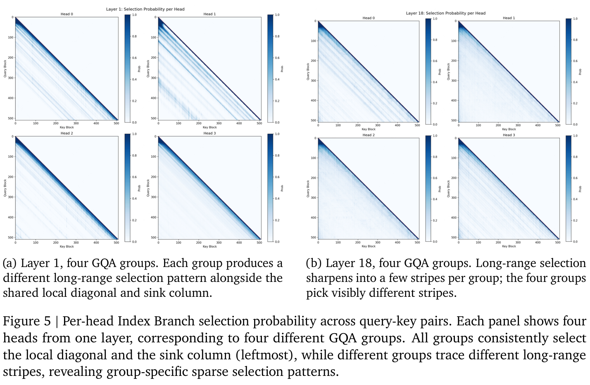
我们进一步考察 MSA 模型中的 attention sink 现象。即使没有显式强制 indexer 选择第一个键值块，我们仍观察到，训练得到的索引分支在所有层和头中，都会自然地为初始块分配较高选择概率。图 6 展示两个代表性层（第 4 层和第 24 层）的结果，每层采样八个头。在两个层中，每个头都将相当一部分 attention 概率质量分配给第一个 token。这证实了，即使在我们的稀疏 attention 机制中，attention 焦点也会自然涌现，并普遍存在于不同头和层之间。
B. 初步实验
本节介绍先导模型上的小规模消融研究。我们的目标是识别对于稳定优化和强下游表现必不可少的训练设计选择。这些结果为第 3 节描述的最终方案提供了实证依据。
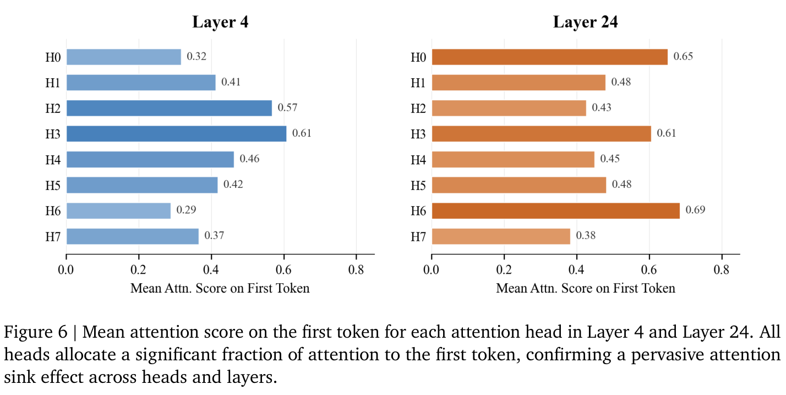
B.1. 设置
本节所有消融都采用一个 10B 参数的先导 Transformer，与正文 MSA 模型属于相同架构系列，但只有 16 层。模型使用 200K token 词表，隐藏维度 \(d_{\mathrm{model}}=2048\)。每个 attention 模块采用 GQA，包含 32 个查询头、4 个 KV 头，头维度为 128，RoPE 维度为 64。MoE 包含 64 个专家，采用 top-4 专家路由，专家内部维度为 1536。模型总参数为 10.53B，每个 token 激活参数为 1.47B。优化器、学习率计划和 tokenizer 与全规模配置一致。每次训练均使用全规模训练所用预训练语料的一个子集。
B.2. 索引分支的 Gradient 来源
训练索引分支的一项核心挑战，是公式（7）的 top-\(k\) 选择不可微。在普通稀疏 attention 前向传播中，选中的块索引仅作为离散路由决策使用。因此，索引投影 \(\boldsymbol{W}_q^{\mathrm{idx}}\) 和 \(\boldsymbol{W}_k^{\mathrm{idx}}\) 无法从语言建模目标获得有效 gradient，indexer 无法学习应该选择哪些块。可以通过多种方式为 indexer 引入训练信号。我们研究两种机制，在保留稀疏 attention 结构的同时，为索引分支提供 gradient。
索引分支输出。第一种机制让索引分支贡献一个额外的 attention 输出。具体而言，我们为索引分支附加一个值投影，并计算 \(\boldsymbol{O}^{\mathrm{idx}}=\mathrm{Attn}(\boldsymbol{Q}^{\mathrm{idx}},\boldsymbol{K}^{\mathrm{idx}},\boldsymbol{V}^{\mathrm{idx}})\in\mathbb{R}^{N\times H_q\times d_h}\)。这一输出通过独立的输出投影加到层输出中，\(\boldsymbol{O}'=\boldsymbol{W}_o\boldsymbol{O}+\boldsymbol{W}_o^{\mathrm{idx}}\boldsymbol{O}^{\mathrm{idx}}\)。这一设计通过索引分支对下一个 token 预测的贡献训练它。
KL 损失。第二种机制在选中的支持集上，将索引分支的选择分布与主分支匹配，直接监督索引分支。我们采用公式（10）定义的辅助损失 \(\mathcal{L}_{\mathrm{KL}}\)。这一损失作用于 \(\boldsymbol{W}_q^{\mathrm{idx}}\) 和 \(\boldsymbol{W}_k^{\mathrm{idx}}\)，为索引选择提供显式训练信号。
为分离这两种 gradient 来源的影响，我们采用三种配置从头训练模型，从第一步开始就使用稀疏 attention：
- 仅 LM 损失：将索引分支输出加到层输出中，模型仅使用语言建模损失训练。
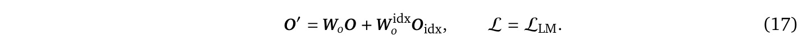
- 仅 KL 损失：丢弃索引分支输出，indexer 仅通过辅助 KL 损失训练。
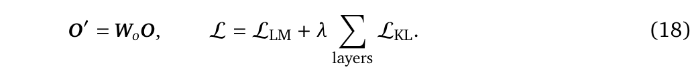
- LM 损失 + KL 损失：同时启用两种机制。
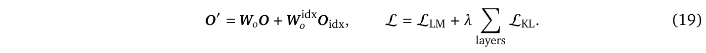
图 7 报告各配置相对于同样数据上训练的 Full-Attention GQA 基线，在每个基准上的差值。两种单信号配置呈现互补的弱点。仅 LM 损失保留了短上下文能力，但长上下文检索表现较差：没有直接针对 top-\(k\) 选择本身的目标时，indexer 缺少直接选择相关块的压力。仅 KL 损失改善了检索，但降低了短上下文能力：从层输出中移除 \(\boldsymbol{O}^{\mathrm{idx}}\)，减少了语言模型可用的 attention 容量。LM 损失 + KL 损失在这两个维度间取得最佳平衡，是本节其余消融所采用的配置。
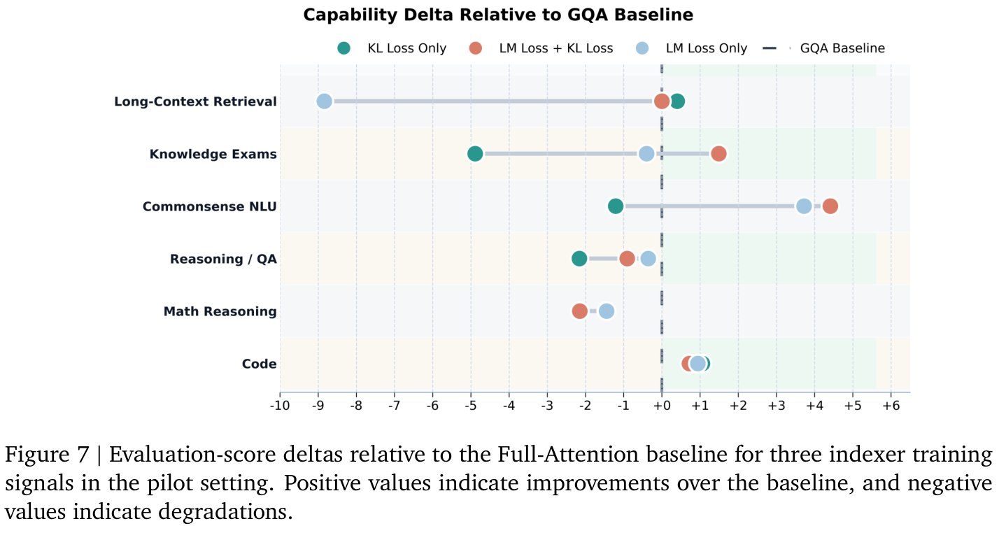
基于这些结果，本节其余消融采用 LM 损失 + KL 损失配置。我们随后在第 C.3 节表明，一旦在全规模设置中使用第 B.4 节引入的 indexer warmup，就不再需要索引分支输出。因此，最终方案保留 KL 监督，但移除索引分支值头及其加性输出路径。
B.3. 将 KL Gradient 限制在索引分支
辅助 KL 损失的目的是训练索引分支，使其匹配主分支选择分布。在默认自动微分图下，KL gradient 通过索引分支的查询和键投影，回传到隐藏状态，然后通过 residual stream 进入主干。在这种情况下，KL 损失变成作用于主干的额外目标，而非针对 indexer 的局部监督信号。
我们观察到这种 gradient 路由的两种失效模式。当 KL 系数较大时，偶发的 KL gradient 尖峰会传播进主干，在几百步内导致 gradient 范数尖峰和 LM 损失发散（图 8）。即使采用稳定系数，标准短上下文基准也会在训练中逐渐退步（图 9）。我们将这种退步归因于自蒸馏效应：主干可以通过简化主分支 attention 分布来降低 KL 损失，而不是改善索引分支。
我们通过在索引分支输入处停止 KL gradient（第 3.2 节），解决这两种失效模式。因此，每层的 KL 损失成为该层 indexer 的局部监督信号。采用这种分离后，在原本不分离时会导致发散的相同 KL 系数下，LM 损失和 gradient 范数保持稳定（图 8），短上下文退步也被消除（图 9）。我们在所有后续训练中都使用这种分离。
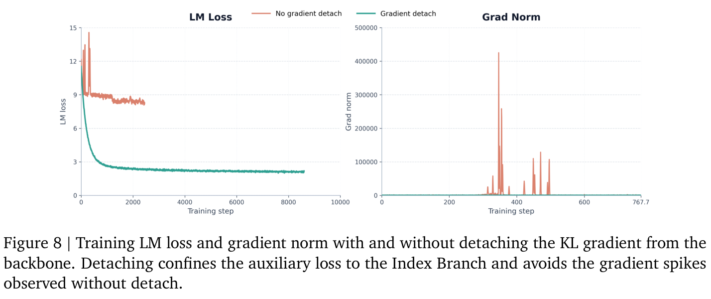
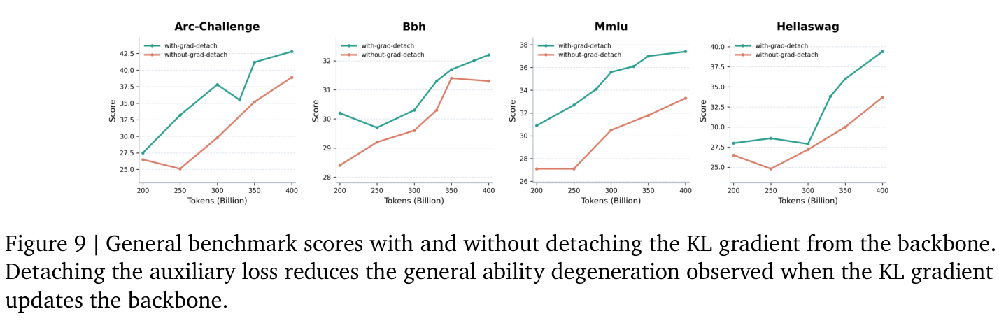
B.4. Indexer Warmup
我们观察到，主分支 attention 分布在训练最早阶段变化迅速。如图 10 所示，attention 熵从最初平滑的分布迅速下降为更尖锐的分布，然后进入较缓慢的表示学习阶段。这使初始化时的稀疏选择很脆弱。如果从第零步就启用 top-\(k\) 选择，索引分支必须追踪一个迅速变化的目标，而其自身选择仍近乎随机。糟糕的早期选择会将主分支路由到信息不足的 token，同时削弱主干学习和 indexer 接收的 KL 监督。
我们通过短暂的 indexer warmup 解决这一问题。在 warmup 期间，主分支使用全 attention，而索引分支根据完整序列上的主分支分布，以 KL 损失训练。这使主干能够在不受稀疏路由错误影响的情况下，度过早期分布变尖锐的阶段，并在 indexer 控制 token 选择之前，赋予其有意义的初始化。经过 \(T_{\mathrm{warm}}\) 步后，我们启用 top-\(k\) 稀疏选择，继续训练，并将 KL 损失限制在选中的支持集上。
图 11 比较了有无这种 warmup 的预训练过程。经过 warmup 的训练取得了更好的短上下文表现和更强的长上下文检索能力。这些结果说明，短暂的全 attention warmup 为稀疏训练提供了更好的初始化。因此，我们也在通过继续预训练，将 Full-Attention checkpoint 转换为稀疏 attention 时采用这种 warmup。
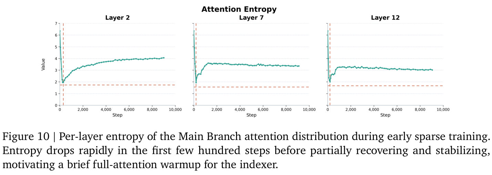
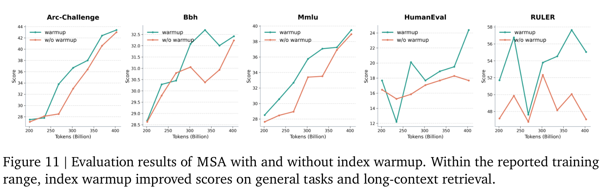
B.5. 可学习的 Attention Sink
图 6 的可视化表明，第一个 token 常常充当 attention sink：即使没有显式强制稀疏选择器包含它，许多头仍会将相当数量的 attention 概率质量分配给序列前缀。这引出了一个问题：是否应该用显式可学习机制表示这种 sink 行为，而非让序列中的第一个真实 token 吸收它。因此，我们测试了 GPT-OSS 风格的可学习 attention sink。具体而言，每个 attention 头都被赋予一个额外的可学习 sink logit，它在 attention softmax 中与正常键位置竞争。
图 12 可视化了由此产生的 attention 模式。可学习 sink 在某些头中吸收了相当多的 attention 概率质量，但没有完全消除原有的首 token sink。在若干头中，尤其是学习到的 sink 接收概率质量较少的头中，第一个 token 仍然获得大量 attention，继续表现为隐式 sink。
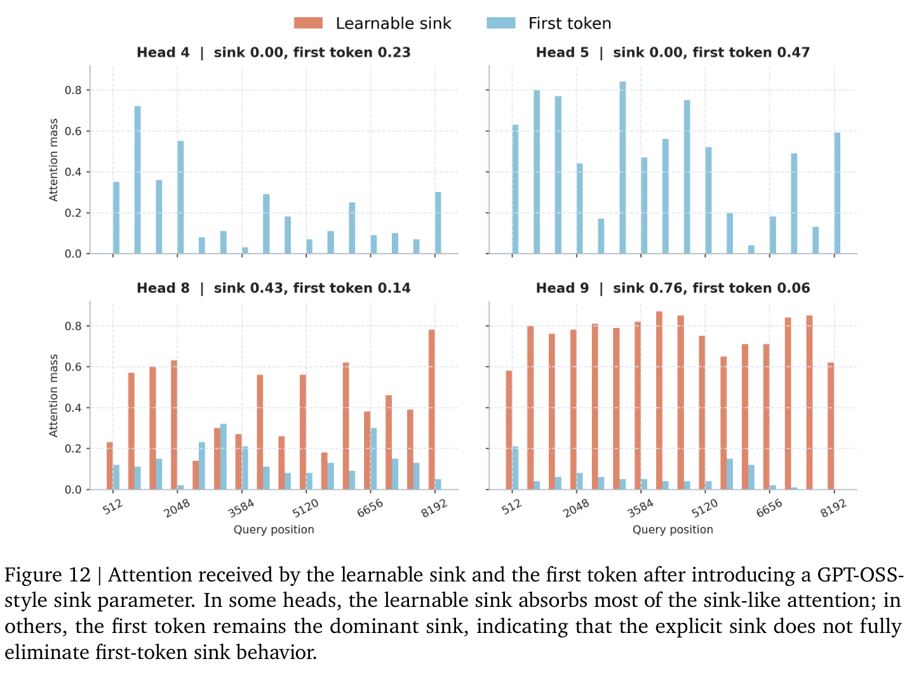
我们还在图 13 中比较了有无可学习 sink 的下游困惑度。可学习 sink 变体相较默认设计没有带来明确或一致的改善。考虑到它增加的参数、实现复杂度，以及它无法完全抑制首 token sink 行为，我们未将可学习 attention sink 纳入最终方案。
B.6. 动态稀疏选择与滑动窗口
为评估动态选择的价值，我们将 MSA 与 FLOPs 匹配的滑动窗口基线比较。该基线移除索引分支，并采用固定稀疏模式：每个查询关注（接原文第 28 页）
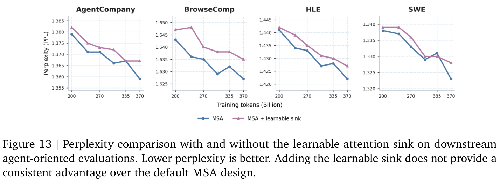
（接原文第 27 页）第一个键块，以及一个以查询为结尾、token 预算相同的局部窗口。因此，两种方法具有相同的选择预算，区别仅在于选中 token 是由位置固定，还是动态选择。
图 14 报告下游 agent 任务上的困惑度。在相同稀疏选择预算下，滑动窗口模型在整个训练轨迹上的困惑度都高于 MSA。尽管两个模型都受益于更多训练 token，固定局部窗口模式仍无法达到动态稀疏选择的困惑度。这说明，对于这些 agent 任务，固定位置的稀疏模式不如依赖内容的 token 选择适合。
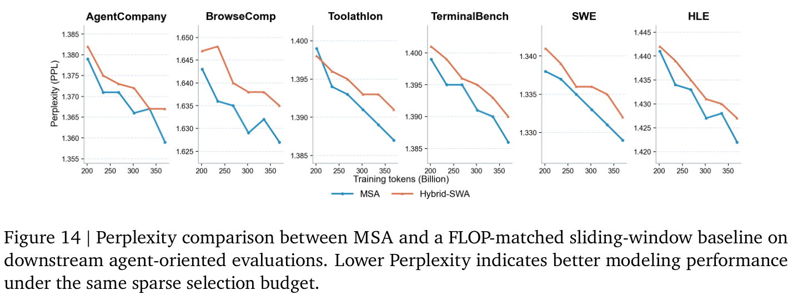
C. 额外消融研究
C.1. 块大小
MSA 主分支的稀疏 attention 计算以连续 \(B_k\) 个 token 的块为单位处理键值对，这同时影响模型表现和效率。更大的块可以提高 kernel 效率，但较粗的选择粒度可能降低检索质量。通过调整 \(B_k\)，同时保持所选 token 总数恒定，我们研究这一权衡。与主要实验相比，这些训练使用更少的训练迭代和评测集子集。
如表 4 所示，在这一设置中，改变块大小对模型质量影响有限。不同 \(B_k\) 值下的 PPL 结果几乎不变，而在块大小从 32 增加至 64 或 128 时，RULER 分数没有显示明确的（接原文第 29 页）
（接原文第 28 页）退化。这表明，在这些消融中，MSA 可以通过更大的键值块改善 kernel 效率，同时仅带来有限的质量损失。
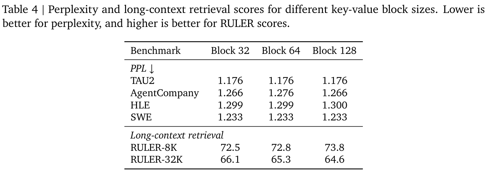
C.2. 强制 Sink 与局部选择
在早期稀疏训练实验中，我们显式强制选择器包含两类块：序列中的第一个块，以及查询位置周围的固定局部窗口。第一个块对应常见的 attention sink 模式，而局部窗口保留对短距离建模重要的邻近上下文，并为 indexer 提供稠密监督。这一设计主要作为稳定机制引入：在 indexer 尚不可靠时，强制保留这些块，可以降低稀疏分支在训练早期遗漏基本上下文的概率。
我们后来发现，这些先验无需硬编码。移除第一个块和固定局部窗口的强制选择后，训练后的模型仍呈现这两种结构：需要时 attention 会集中于序列前缀，邻近 token 也仍然经常被选择。如表 5 所示，移除强制 sink 和固定局部选择，对标准模型质量影响很小：推理、代码和 PPL 指标几乎不变。长上下文检索也相当。这些结果表明，稀疏模型可以在没有硬编码选择规则的情况下，学习 sink 和局部选择模式。因此，最终方案不会强制选择第一个块或较大的局部窗口，只强制选择特殊的不完整自身块。
C.3. 索引分支值头
我们的初步实验（第 B.2 节）表明，通过索引分支提供额外 attention 输出，有助于模型从第零步开始稀疏训练。然而，这个索引值头引入额外计算和复杂度。由于第 B.4 节的 indexer warmup 已经改善了稀疏训练初始化，我们进一步消融值头是否仍然必要。
我们将原有的带值头设计，与仅用 KL 对齐信号训练 indexer 的无值头变体比较。如表 6 所示，移除索引值头不会在评测集上导致系统性退化。无值头变体在部分通用推理基准上略好，而带值头变体在一些数学和代码任务上保留小幅优势。在多模态基准和长上下文检索上，差异也各有优劣。
总体而言，结果说明一旦采用索引分支 warmup，索引值头就不再关键。它对下游质量的影响较小，且取决于具体基准，两种变体都没有（接原文第 30 页）
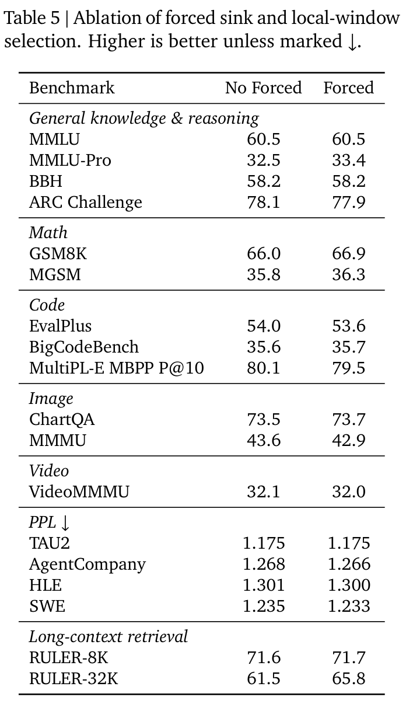
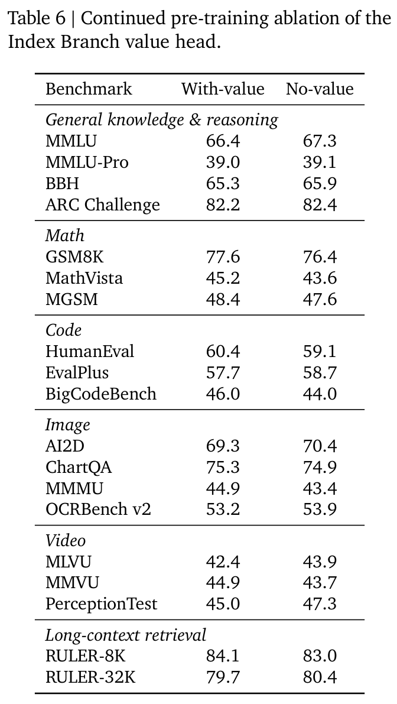
（接原文第 29 页）始终占优。这表明，在较早方案中，\(\boldsymbol{O}^{\mathrm{idx}}\) 的主要作用，是提供额外的早期训练信号，而不是在收敛时提供必不可少的容量。因此，最终设计基于效率考虑，移除了索引值头。在推理时，top-\(k\) indexer 只需要 \(\boldsymbol{Q}^{\mathrm{idx}}\boldsymbol{K}_{\mathrm{idx}}^\top\) 的按块最大值，完全避免值聚合路径和指数计算。